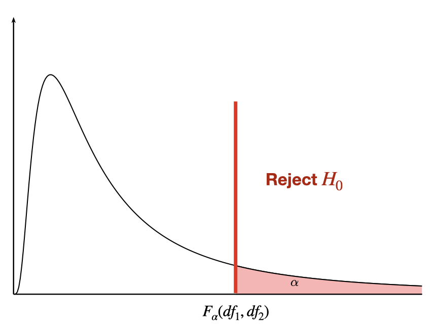

1 Correlation
1.1 Correlation and Causation

Figure 1.1: https://xkcd.com/925/
2 Simple regression: Introduction
2.1 Motivation
Predicting the Price of a used car


2.2 Simple linear regression
Simple linear regression (population) \[Y=\beta_0+\beta_1 x+\epsilon\] In our example: \[Price=\beta_0+\beta_1 Age+\epsilon\]
Simple linear regression (sample) \[\hat{y}=b_0+b_1 x\] where the coefficient \(\beta_0\) (and its estimate \(b_0\) or \(\hat{\beta}_0\) ) refers to the \(y\)-intercept or simply the intercept or the constant of the regression line, and the coefficient \(\beta_1\) (and its estimate \(b_1\) or \(\hat{\beta}_1\) ) refers to the slope of the regression line.
2.3 Least-Squares criterion
The least-squares criterion is that the line that best fits a set of data points is the one having the smallest possible sum of squared errors. The `errors’ are the vertical distances of the data points to the line.
We need to use the data to estimate the values of the parameters \(\beta_0\) and \(\beta_1\), i.e. to fit a straight line to the set of points \(\{(x_i , y_i )\}\). There are many straight lines we could use, so we need some idea of which is best. Clearly, a bad straight line model would be one that had many large errors, and conversely, a good straight line model will have, on average, small errors. We quantify this by the sum of squares of the errors: \[Q(\beta_0,\beta_1)=\sum_{i=1}^n \epsilon_i^2=\sum_{i=1}^n[y_i-(\beta_0 + \beta_1 x_i)]^2\] then the “line of best fit” will correspond to the line with values of \(\beta_0\) and \(\beta_1\) that minimises \(Q(\beta_0,\beta_1)\).
The regression line is the line that fits a set of data points according to the least squares criterion.
The regression equation is the equation of the regression line.
The regression equation for a set of \(n\) data points is \(\hat{y}=b_0+b_1\;x\), where \[b_1=\frac{S_{xy}}{S_{xx}}=\frac{\sum (x_i-\bar{x})(y_i-\bar{y})}{\sum (x_i-\bar{x})^2} \;\;\text{and}\;\; b_0=\bar{y}-b_1\; \bar{x}\]
\(y\) is the dependent variable (or response variable) and \(x\) is the independent variable (predictor variable or explanatory variable).
\(b_0\) is called the y-intercept and \(b_1\) is called the slope.

SSE and the standard error
This least square regression line minimizes the error sum of squares \[SSE=\sum e^2_i =\sum (y_i-\hat{y}_i)^2\] The standard error of the estimate, \(s_e=\sqrt{SSE/(n-2)}\), indicates how much, on average, the observed values of the response variable differ from the predicated values of the response variable.

2.4 Example: used cars (cont.)
The table below displays data on Age (in years) and Price (in hundreds of dollars) for a sample of cars of a particular make and model.(Weiss, 2012)
| Price (\(y\)) | Age (\(x\)) |
|---|---|
| 85 | 5 |
| 103 | 4 |
| 70 | 6 |
| 82 | 5 |
| 89 | 5 |
| 98 | 5 |
| 66 | 6 |
| 95 | 6 |
| 169 | 2 |
| 70 | 7 |
| 48 | 7 |
For our example, age is the predictor variable and price is the response variable.
The regression equation is \(\hat{y}=195.47-20.26\;x\), where the slope \(b_1=-20.26\) and the intercept \(b_0=195.47\)
Prediction: for \(x = 4\), that is we would like to predict the price of a 4-year-old car, \[\hat{y}=195.47-20.26 {\color{blue}(4)}= 114.43 \;\;\text{or}\;\; \$ 11443\]

Back to our used cars example, we want to find the “best line” through the data points, which can be used to predict prices of used cars based on their age.
First we need to enter the data in R.
Price<-c(85, 103, 70, 82, 89, 98, 66, 95, 169, 70, 48)
Age<- c(5, 4, 6, 5, 5, 5, 6, 6, 2, 7, 7)
carSales<-data.frame(Price,Age)
str(carSales)## 'data.frame': 11 obs. of 2 variables:
## $ Price: num 85 103 70 82 89 98 66 95 169 70 ...
## $ Age : num 5 4 6 5 5 5 6 6 2 7 ...cor(Age, Price, method = "pearson")## [1] -0.9237821Scatterplot: Age vs. Price
library(ggplot2)## Warning: package 'ggplot2' was built under R version 4.3.2ggplot(carSales, aes(x=Age, y=Price)) + geom_point()# Remove the confidence interval
ggplot(carSales, aes(x=Age, y=Price)) +
geom_point()+
geom_smooth(method=lm, formula= y~x, se=FALSE)2.5 Prediction
# simple linear regression
reg<-lm(Price~Age)
print(reg)##
## Call:
## lm(formula = Price ~ Age)
##
## Coefficients:
## (Intercept) Age
## 195.47 -20.26To predict the price of a 4-year-old car (\(x=4\)): \[\hat{y}=195.47-20.26(4)=114.43\]

3 Simple Regression: Coefficient of Determination
3.1 Extrapolation
Within the range of the observed values of the predictor variable, we can reasonably use the regression equation to make predictions for the response variable.
However, to do so outside the range, which is called Extrapolation, may not be reasonable because the linear relationship between the predictor and response variables may not hold here.
To predict the price of an 11-year old car, \(\hat{y}=195.47-20.26 (11)=-27.39\) or $ 2739, this result is unrealistic as no one is going to pay us $2739 to take away their 11-year old car.

3.2 Outliers and influential observations
Recall that an outlier is an observation that lies outside the overall pattern of the data. In the context of regression, an outlier is a data point that lies far from the regression line, relative to the other data points.
An influential observation is a data point whose removal causes the regression equation (and line) to change considerably.
From the scatterplot, it seems that the data point (2,169) might be an influential observation. Removing that data point and recalculating the regression equation yields \(\hat{y}=160.33-14.24\;x\).

3.3 Coefficient of determination


The total variation in the observed values of the response variable, \(SST=\sum(y_i-\bar{y})^2\), can be partitioned into two components:
- The variation in the observed values of the response variable explained by the regression: \(SSR=\sum(\hat{y}_i-\bar{y})^2\)
- The variation in the observed values of the response variable not explained by the regression: \(SSE=\sum(y_i-\hat{y}_i)^2\)
The coefficient of determination, \(R^2\) (or \(R\)-square), is the proportion of the variation in the observed values of the response variable explained by the regression, which is given by \[R^2=\frac{SSR}{SST}=\frac{SST-SSE}{SST}=1-\frac{SSE}{SST}\] where \(SST=SSR+SSE\). \(R^2\) is a descriptive measure of the utility of the regression equation for making prediction.
The coefficient of determination \(R^2\) always lies between 0 and 1. A value of \(R^2\) near 0 suggests that the regression equation is not very useful for making predictions, whereas a value of \(R^2\) near 1 suggests that the regression equation is quite useful for making predictions.
For a simple linear regression (one independent variable) ONLY, \(R^2\) is the square of Pearson correlation coefficient, \(r\).
\(\text{Adjusted}\;R^2\) is a modification of \(R^2\) which takes into account the number of independent variables, say \(k\). In a simple linear regression \(k=1\). Adjusted-\(R^2\) increases only when a significant related independent variable is added to the model. Adjusted-\(R^2\) has a crucial role in the process of model building. Adjusted-\(R^2\) is given by \[\text{Adjusted-}R^2=1-(1-R^2)\frac{n-1}{n-k-1}\]
3.4 Notation used in regression
| Quantity | Defining formula | Computing formula |
|---|---|---|
| \(S_{xx}\) | \(\sum (x_i-\bar{x})^2\) | \(\sum x^2_i - n \bar{x}^2\) |
| \(S_{xy}\) | \(\sum (x_i-\bar{x})(y_i-\bar{y})\) | \(\sum x_i y_i - n \bar{x}\bar{y}\) |
| \(S_{yy}\) | \(\sum (y_i-\bar{y})^2\) | \(\sum y^2_i - n \bar{y}^2\) |
where \(\bar{x}=\frac{\sum x_i}{n}\) and \(\bar{y}=\frac{\sum y_i}{n}\). And,
\[SST=S_{yy},\;\;\; SSR=\frac{S^2_{xy}}{S_{xx}},\;\;\; SSE=S_{yy}-\frac{S^2_{xy}}{S_{xx}} \] and \(SST=SSR+SSE\).
3.5 Pearson correlation coefficient
Pearson correlation coefficient (\(r\)) is a measure of the strength and the direction of a linear relationship between two variables in the sample,
\[r=\frac{\sum(x_{i} -\bar{x})(y_{i} -\bar{y}) }{\sqrt{\sum (x_{i} -\bar{x})^{2} \sum (y_{i} -\bar{y})^{2} } } \]
where \(r\) always lies between -1 and 1. Values of \(r\) near -1 or 1 indicate a strong linear relationship between the variables whereas values of \(r\) near 0 indicate a weak linear relationship between variables. If \(r\) is zero the variables are linearly uncorrelated, that is there is no linear relationship between the two variables.
3.6 Hypothesis testing for the population correlation coefficient \(\rho\)
Hypothesis testing for the population correlation coefficient \(\rho\).
Assumptions:
- The sample of paired \((x, y)\) data is a random sample.
- The pairs of \((x, y)\) data have a bivariate normal distribution.
The null hypothesis
\(H_0: \rho = 0\) (no significant correlation)
against one of the alternative hypotheses:
\(H_1: \rho \neq 0\) (significant correlation) ``Two-tailed test’’
\(H_1: \rho < 0\) (significant negative correlation) ``Left-tailed test’’
\(H_1: \rho > 0\) (significant positive correlation) ``Right-tailed test’’
Compute the value of the test statistic: \[t=\frac{r\; \sqrt{n-2} }{\sqrt{1-r^{2} } }\sim T_{(n-2)} \;\; \text{with}\;\; df = n-2. \]
where \(n\) is the sample size.
The critical value(s) for this test can be found from T distribution table ( \(\pm t_{\alpha/2}\) for a two-tailed test, \(- t_{\alpha}\) for a left-tailed test and \(t_{\alpha}\) for a right-tailed test).

- If the value of the test statistic falls in the rejection region, then reject \(H_0\); otherwise, do not reject \(H_0\).
- Statistical packages report p-values rather than critical values which can be used in testing the null hypothesis \(H_0\).
3.7 Correlation and linear transformation
Suppose we have a linear transformation of the two variables \(x\) and \(y\), say \(x_1=a x+b\) and \(y_1=cy+d\) where \(a>0\) and \(c>0\). Then the Pearson correlation coefficient between \(x_1\) and \(y_1\) is equal to Pearson correlation coefficient between \(x\) and \(y\).
For our example, suppose we convert cars’ prices from dollars to pounds (say \(\$1=\) , so \(y_1=0.75 y\)), and we left the age of the cars unchanged. Then we will find that the correlation between the age of the car and its price in pounds is equal to the one we obtained before (i.e. the correlation between the age and the price in dollars).
A special linear transformation is to standardize one or both variables. That is obtaining the values \(z_x=(x-\bar{x})/s_x\) and \(z_y=(y-\bar{y})/s_y\). Then the correlation between \(z_x\) and \(z_y\) is equal to the correlation between \(x\) and \(y\).
3.8 Spearman’s rho correlation coefficient (\(r_s\))
When the normality assumption for the Pearson correlation coefficient \(r\) cannot be met, or when one or both variables may be ordinal, then we should consider nonparametric methods such as Spearman’s rho and Kendall’s tau correlation coefficients.
Spearman’s rho correlation coefficient, \(r_s\),can be obtained by first rank the \(x\) values (and \(y\) values) among themselves, and then we compute the Pearson correlation coefficient of the rank pairs. Similarly \(-1\leq r_s \leq 1\), the values of \(r_s\) range from -1 to +1 inclusive.
Spearman’s rho correlation coefficient can be used to describe the strength of the linear relationship as well as the nonlinear relationship.
3.9 Kendall’s tau (\(\tau\)) correlation coefficient
Kendall’s tau, \(\tau\), measures the concordance of the relationship between two variables, and \(-1\leq \tau \leq 1\).
Any pair of observations \((x_i, y_i)\) and \((x_j, y_j)\) are said to be concordant if both \(x_i > x_j\) and \(y_i > y_j\) or if both \(x_i < x_j\) and \(y_i < y_j\). And they are said to be discordant, if \(x_i > x_j\) and \(y_i < y_j\) or if \(x_i < x_j\) and \(y_i > y_j\). We will have \(n(n-1)/2\) of pairs to compare.
The Kendall’s tau (\(\tau\)) correlation coefficient is defined as: \[\tau=\frac{\text{number of concordant pairs} - \text{number of discordant pairs}}{n(n-1)/2}\]
3.10 Example: used cars
The table below displays data on Age (in years) and Price (in hundreds of dollars) for a sample of cars of a particular make and model (Weiss, 2012).
| Price (\(y\)) | Age (\(x\)) |
|---|---|
| 85 | 5 |
| 103 | 4 |
| 70 | 6 |
| 82 | 5 |
| 89 | 5 |
| 98 | 5 |
| 66 | 6 |
| 95 | 6 |
| 169 | 2 |
| 70 | 7 |
| 48 | 7 |
The Pearson correlation coefficient, \[r=\frac{\sum x_i y_i - (\sum x_i) (\sum y_i)/n }{\sqrt{ [\sum x^2_{i} -(\sum x_i)^2/n] [\sum y^2_{i} -(\sum y_i)^2/n] } } \] \[r=\frac{4732-(58)(975)/11}{\sqrt{(326-58^2/11)( 96129-975^2/11)}}=-0.924\] the value of \(r=-0.924\) suggests a strong negative linear correlation between age and price.
Test the hypothesis \(H_0: \rho = 0\) (no linear correlation) against \(H_1: \rho < 0\) (negative correlation) at significant level \(\alpha=0.05\).
Compute the value of the test statistic: \[t=\frac{r\; \sqrt{n-2} }{\sqrt{1-r^{2} } }=\frac{-0.924\sqrt{11-2}}{\sqrt{1-(-0.924)^2}}=-7.249 \]
Since \(t=-7.249<-1.833\), reject \(H_0\).

Using R:
First we need to enter the data in R.
Price<-c(85, 103, 70, 82, 89, 98, 66, 95, 169, 70, 48)
Age<- c(5, 4, 6, 5, 5, 5, 6, 6, 2, 7, 7)
carSales<-data.frame(Price,Age)
str(carSales)## 'data.frame': 11 obs. of 2 variables:
## $ Price: num 85 103 70 82 89 98 66 95 169 70 ...
## $ Age : num 5 4 6 5 5 5 6 6 2 7 ...Now let us plot age against price, i.e. a scatterplot.
plot(Price ~ Age, pch=16, col=2)or we can use ggplot2 for a much nicer plot.
library(ggplot2)
# Basic scatter plot
ggplot(carSales, aes(x=Age, y=Price)) + geom_point()
From this plot it seems that there is a negative linear relationship between age and price. There are several tools that can help us to measure this relationship more precisely.
cor.test(Age, Price,
alternative = "less",
method = "pearson", conf.level = 0.95)##
## Pearson's product-moment correlation
##
## data: Age and Price
## t = -7.2374, df = 9, p-value = 2.441e-05
## alternative hypothesis: true correlation is less than 0
## 95 percent confidence interval:
## -1.0000000 -0.7749819
## sample estimates:
## cor
## -0.9237821Suppose now we scale both variables (standardized)
cor.test(scale(Age), scale(Price),
alternative = "less",
method = "pearson", conf.level = 0.95)##
## Pearson's product-moment correlation
##
## data: scale(Age) and scale(Price)
## t = -7.2374, df = 9, p-value = 2.441e-05
## alternative hypothesis: true correlation is less than 0
## 95 percent confidence interval:
## -1.0000000 -0.7749819
## sample estimates:
## cor
## -0.9237821We notice that corr(age, price in pounds) \(=\) corr(age, price in dollars).
\(~\)
We can also obtain Spearman’s rho and Kendall’s tau as follows.
cor.test(Age, Price,
alternative = "less",
method = "spearman", conf.level = 0.95)##
## Spearman's rank correlation rho
##
## data: Age and Price
## S = 403.26, p-value = 0.0007267
## alternative hypothesis: true rho is less than 0
## sample estimates:
## rho
## -0.8330014cor.test(Age, Price,
alternative = "less",
method = "kendall", conf.level = 0.95)##
## Kendall's rank correlation tau
##
## data: Age and Price
## z = -2.9311, p-value = 0.001689
## alternative hypothesis: true tau is less than 0
## sample estimates:
## tau
## -0.7302967\(~\)
As the p-values for all three tests (Pearson, Spearman, Kendall) less than \(\alpha=0.05\), we reject the null hypothesis of no correlation between the age and the price, at the 5% significance level.
\(~\)
Now what do you think about correlation and causation?

Figure 3.1: https://xkcd.com/552/
4 Simple regression: Introduction
4.1 Motivation
Predicting the Price of a used car
4.2 Simple linear regression
Simple linear regression (population) \[Y=\beta_0+\beta_1 x+\epsilon\] In our example: \[Price=\beta_0+\beta_1 Age+\epsilon\]
Simple linear regression (sample) \[\hat{y}=b_0+b_1 x\] where the coefficient \(\beta_0\) (and its estimate \(b_0\) or \(\hat{\beta}_0\) ) refers to the \(y\)-intercept or simply the intercept or the constant of the regression line, and the coefficient \(\beta_1\) (and its estimate \(b_1\) or \(\hat{\beta}_1\) ) refers to the slope of the regression line.
4.3 Least-Squares criterion
The least-squares criterion is that the line that best fits a set of data points is the one having the smallest possible sum of squared errors. The `errors’ are the vertical distances of the data points to the line.
We need to use the data to estimate the values of the parameters \(\beta_0\) and \(\beta_1\), i.e. to fit a straight line to the set of points \(\{(x_i , y_i )\}\). There are many straight lines we could use, so we need some idea of which is best. Clearly, a bad straight line model would be one that had many large errors, and conversely, a good straight line model will have, on average, small errors. We quantify this by the sum of squares of the errors: \[Q(\beta_0,\beta_1)=\sum_{i=1}^n \epsilon_i^2=\sum_{i=1}^n[y_i-(\beta_0 + \beta_1 x_i)]^2\] then the “line of best fit” will correspond to the line with values of \(\beta_0\) and \(\beta_1\) that minimises \(Q(\beta_0,\beta_1)\).
The regression line is the line that fits a set of data points according to the least squares criterion.
The regression equation is the equation of the regression line.
The regression equation for a set of \(n\) data points is \(\hat{y}=b_0+b_1\;x\), where \[b_1=\frac{S_{xy}}{S_{xx}}=\frac{\sum (x_i-\bar{x})(y_i-\bar{y})}{\sum (x_i-\bar{x})^2} \;\;\text{and}\;\; b_0=\bar{y}-b_1\; \bar{x}\]
\(y\) is the dependent variable (or response variable) and \(x\) is the independent variable (predictor variable or explanatory variable).
\(b_0\) is called the y-intercept and \(b_1\) is called the slope.
SSE and the standard error
This least square regression line minimizes the error sum of squares \[SSE=\sum e^2_i =\sum (y_i-\hat{y}_i)^2\] The standard error of the estimate, \(s_e=\sqrt{SSE/(n-2)}\), indicates how much, on average, the observed values of the response variable differ from the predicated values of the response variable.
4.4 Example: used cars (cont.)
The table below displays data on Age (in years) and Price (in hundreds of dollars) for a sample of cars of a particular make and model.(Weiss, 2012)
| Price (\(y\)) | Age (\(x\)) |
|---|---|
| 85 | 5 |
| 103 | 4 |
| 70 | 6 |
| 82 | 5 |
| 89 | 5 |
| 98 | 5 |
| 66 | 6 |
| 95 | 6 |
| 169 | 2 |
| 70 | 7 |
| 48 | 7 |
For our example, age is the predictor variable and price is the response variable.
The regression equation is \(\hat{y}=195.47-20.26\;x\), where the slope \(b_1=-20.26\) and the intercept \(b_0=195.47\)
Prediction: for \(x = 4\), that is we would like to predict the price of a 4-year-old car, \[\hat{y}=195.47-20.26 {\color{blue}(4)}= 114.43 \;\;\text{or}\;\; \$ 11443\]
Back to our used cars example, we want to find the “best line” through the data points, which can be used to predict prices of used cars based on their age.
First we need to enter the data in R.
Price<-c(85, 103, 70, 82, 89, 98, 66, 95, 169, 70, 48)
Age<- c(5, 4, 6, 5, 5, 5, 6, 6, 2, 7, 7)
carSales<-data.frame(Price,Age)
str(carSales)## 'data.frame': 11 obs. of 2 variables:
## $ Price: num 85 103 70 82 89 98 66 95 169 70 ...
## $ Age : num 5 4 6 5 5 5 6 6 2 7 ...cor(Age, Price, method = "pearson")## [1] -0.9237821Scatterplot: Age vs. Price
library(ggplot2)
ggplot(carSales, aes(x=Age, y=Price)) + geom_point()
# Remove the confidence interval
ggplot(carSales, aes(x=Age, y=Price)) +
geom_point()+
geom_smooth(method=lm, formula= y~x, se=FALSE)
4.5 Prediction
# simple linear regression
reg<-lm(Price~Age)
print(reg)##
## Call:
## lm(formula = Price ~ Age)
##
## Coefficients:
## (Intercept) Age
## 195.47 -20.26To predict the price of a 4-year-old car (\(x=4\)): \[\hat{y}=195.47-20.26(4)=114.43\]
# Simple Regression: Coefficient of Determination
4.6 Extrapolation
Within the range of the observed values of the predictor variable, we can reasonably use the regression equation to make predictions for the response variable.
However, to do so outside the range, which is called Extrapolation, may not be reasonable because the linear relationship between the predictor and response variables may not hold here.
To predict the price of an 11-year old car, \(\hat{y}=195.47-20.26 (11)=-27.39\) or $ 2739, this result is unrealistic as no one is going to pay us $2739 to take away their 11-year old car.
4.7 Outliers and influential observations
Recall that an outlier is an observation that lies outside the overall pattern of the data. In the context of regression, an outlier is a data point that lies far from the regression line, relative to the other data points.
An influential observation is a data point whose removal causes the regression equation (and line) to change considerably.
From the scatterplot, it seems that the data point (2,169) might be an influential observation. Removing that data point and recalculating the regression equation yields \(\hat{y}=160.33-14.24\;x\).
4.8 Coefficient of determination
The total variation in the observed values of the response variable, \(SST=\sum(y_i-\bar{y})^2\), can be partitioned into two components:
- The variation in the observed values of the response variable explained by the regression: \(SSR=\sum(\hat{y}_i-\bar{y})^2\)
- The variation in the observed values of the response variable not explained by the regression: \(SSE=\sum(y_i-\hat{y}_i)^2\)
The coefficient of determination, \(R^2\) (or \(R\)-square), is the proportion of the variation in the observed values of the response variable explained by the regression, which is given by \[R^2=\frac{SSR}{SST}=\frac{SST-SSE}{SST}=1-\frac{SSE}{SST}\] where \(SST=SSR+SSE\). \(R^2\) is a descriptive measure of the utility of the regression equation for making prediction.
The coefficient of determination \(R^2\) always lies between 0 and 1. A value of \(R^2\) near 0 suggests that the regression equation is not very useful for making predictions, whereas a value of \(R^2\) near 1 suggests that the regression equation is quite useful for making predictions.
For a simple linear regression (one independent variable) ONLY, \(R^2\) is the square of Pearson correlation coefficient, \(r\).
\(\text{Adjusted}\;R^2\) is a modification of \(R^2\) which takes into account the number of independent variables, say \(k\). In a simple linear regression \(k=1\). Adjusted-\(R^2\) increases only when a significant related independent variable is added to the model. Adjusted-\(R^2\) has a crucial role in the process of model building. Adjusted-\(R^2\) is given by \[\text{Adjusted-}R^2=1-(1-R^2)\frac{n-1}{n-k-1}\]
4.9 Notation used in regression
| Quantity | Defining formula | Computing formula |
|---|---|---|
| \(S_{xx}\) | \(\sum (x_i-\bar{x})^2\) | \(\sum x^2_i - n \bar{x}^2\) |
| \(S_{xy}\) | \(\sum (x_i-\bar{x})(y_i-\bar{y})\) | \(\sum x_i y_i - n \bar{x}\bar{y}\) |
| \(S_{yy}\) | \(\sum (y_i-\bar{y})^2\) | \(\sum y^2_i - n \bar{y}^2\) |
where \(\bar{x}=\frac{\sum x_i}{n}\) and \(\bar{y}=\frac{\sum y_i}{n}\). And,
\[SST=S_{yy},\;\;\; SSR=\frac{S^2_{xy}}{S_{xx}},\;\;\; SSE=S_{yy}-\frac{S^2_{xy}}{S_{xx}} \] and \(SST=SSR+SSE\).
5 Simple Linear Regression: Assumptions
Recall that the simple linear regression model for \(Y\) on \(x\) is \[Y=\beta_0+\beta_1 x+\epsilon\] where
\(Y\) : the dependent or response variable
\(x\) : the independent or predictor variable, assumed known
\(\beta_0,\beta_1\) : the regression parameters, the intercept and slope of the regression line
\(\epsilon\) : the random regression error around the line.
and the regression equation for a set of \(n\) data points is \(\hat{y}=b_0+b_1\;x\), where \[b_1=\frac{S_{xy}}{S_{xx}}=\frac{\sum (x_i-\bar{x})(y_i-\bar{y})}{\sum (x_i-\bar{x})^2}\] and \[b_0=\bar{y}-b_1\; \bar{x}\] where \(b_0\) is called the y-intercept and \(b_1\) is called the slope.
The residual standard error \(s_e\) can be defined as
\[s_e=\sqrt{\frac{SSE}{n-2}}=\sqrt{\frac{\sum(y_i-\hat{y}_i)^2}{n-2}} \] \(s_e\) indicates how much, on average, the observed values of the response variable differ from the predicated values of the response variable. \(~\)
5.1 Simple Linear Regression Assumptions (SLR)
We have a collection of \(n\) pairs of observations \(\{(x_i,y_i)\}\), and the idea is to use them to estimate the unknown parameters \(\beta_0\) and \(\beta_1\). \[\epsilon_i=Y_i-(\beta_0+\beta_1\;x_i)\;,\;\;i=1,2,\ldots,n\]
We need to make the following key assumptions on the errors:
A. \(E(\epsilon_i)=0\) (errors have mean zero and do not depend on \(x\))
B. \(Var(\epsilon_i)=\sigma^2\) (errors have a constant variance, homoscedastic, and do not depend on \(x\))
C. \(\epsilon_1, \epsilon_2,\ldots \epsilon_n\) are independent.
D. \(\epsilon_i \mbox{ are all i.i.d. } N(0, \;\sigma^2)\), meaning that the errors are independent and identically distributed as Normal with mean zero and constant variance \(\sigma^2\).
The above assumptions, and conditioning on \(\beta_0\) and \(\beta_1\), imply:
Linearity: \(E(Y_i|X_i)=\beta_0+\beta_1\;x_i\)
Homogenity or homoscedasticity: \(Var(Y_i|X_i)=\sigma^2\)
Independence: \(Y_1,Y_2,\ldots,Y_n\) are all independent given \(X_i\).
Normality: \(Y_i|X_i\sim N(\beta_0+\beta_1x_i,\;\sigma^2)\)

5.2 Example: used cars (cont.)

We can see that for each age, the mean price of all cars of that age lies on the regression line \(E(Y|x)=\beta_0+\beta_1x\). And, the prices of all cars of that age are assumed to be normally distributed with mean equal to \(\beta_0+\beta_1 x\) and variance \(\sigma^2\). For example, the prices of all 4-year-old cars must be normally distributed with mean \(\beta_0+\beta_1 (4)\) and variance \(\sigma^2\).
We used the least square method to find the best fit for this data set, and residuals can be obtained as \(e_i=y_i-\hat{y_i}= y_i-(195.47 -20.26x_i)\).

5.3 Residual Analysis
The easiest way to check the simple linear regression assumptions is by constructing a scatterplot of the residuals (\(e_i=y_i-\hat{y_i}\)) against the fitted values (\(\hat{y_i}\)) or against \(x\). If the model is a good fit, then the residual plot should show an even and random scatter of the residuals.

5.3.1 Linearity
The regression needs to be linear in the parameters.
\[Y=\beta_0+\beta_1\;x+\epsilon\] \[E(Y_i|X_i)=\beta_0+\beta_1\;x_i \equiv E(\epsilon_i|X_i)=E(\epsilon_i)=0\]

The residual plot below shows that a linear regression model is not appropriate for this data.

5.3.2 Constant error variance (homoscedasticity)
The plot shows the spread of the residuals is increasing as the fitted values (or \(x\)) increases, which indicates that we have Heteroskedasticity (non-constant variance). The standard errors are biased when heteroskedasticity is present, but the regression coefficients will still be unbiased.

How to detect?
Residuals plot (fitted vs residuals)
Goldfeld–Quandt test
Breusch-Pagan test
How to fix?
White’s standard errors
Weighted least squares model
Taking the log
5.3.3 Independent errors terms (no autocorrelation)
The problem of autocorrelation is most likely to occur in time series data, however, it can also occur in cross-sectional data, e.g. if the model is incorrectly specified. When autocorrelation is present, the regression coefficients will still be unbiased, however, the standard errors and test statitics are no longer valid.
An example of no autocorrelation

An example of positive autocorrelation

An example of negative autocorrelation

How to detect?
Residuals plot
Durbin-Watson test
Breusch-Godfrey test
How to fix?
Investigate omitted variables (e.g. trend, business cycle)
Use advanced models (e.g. AR model)
5.3.4 Normality of the errors
We need the errors to be normally distributed. Normality is only required for the sampling distributions, hypothesis testing and confidence intervals.
How to detect?
Histogram of residuals
Q-Q plot of residuals
Kolmogorov–Smirnov test
Shapiro–Wilk test
How to fix?
Change the functional form (e.g. taking the log)
Larger sample if possible
5.4 Example: Infant mortality and GDP
Let us investigate the relationship between infant mortality and the wealth of a country. We will use data on 207 countries of the world gathered by the UN in 1998 (the ‘UN’ data set is available from the R package ‘car’). The data set contains two variables: the infant mortality rate in deaths per 1000 live births, and the GDP per capita in US dollars. There are some missing data values for some countries, so we will remove the missing data before we fit our model.
# install.packages("carData")
library(carData)
data(UN)
options(scipen=999)
# Remove missing data
newUN<-na.omit(UN)
str(newUN)## 'data.frame': 193 obs. of 7 variables:
## $ region : Factor w/ 8 levels "Africa","Asia",..: 2 4 1 1 5 2 3 8 4 2 ...
## $ group : Factor w/ 3 levels "oecd","other",..: 2 2 3 3 2 2 2 1 1 2 ...
## $ fertility : num 5.97 1.52 2.14 5.13 2.17 ...
## $ ppgdp : num 499 3677 4473 4322 9162 ...
## $ lifeExpF : num 49.5 80.4 75 53.2 79.9 ...
## $ pctUrban : num 23 53 67 59 93 64 47 89 68 52 ...
## $ infantMortality: num 124.5 16.6 21.5 96.2 12.3 ...
## - attr(*, "na.action")= 'omit' Named int [1:20] 4 6 21 35 38 54 67 75 77 78 ...
## ..- attr(*, "names")= chr [1:20] "American Samoa" "Anguilla" "Bermuda" "Cayman Islands" ...fit<- lm(infantMortality ~ ppgdp, data=newUN)
summary(fit)##
## Call:
## lm(formula = infantMortality ~ ppgdp, data = newUN)
##
## Residuals:
## Min 1Q Median 3Q Max
## -31.48 -18.65 -8.59 10.86 83.59
##
## Coefficients:
## Estimate Std. Error t value Pr(>|t|)
## (Intercept) 41.3780016 2.2157454 18.675 < 0.0000000000000002 ***
## ppgdp -0.0008656 0.0001041 -8.312 0.0000000000000173 ***
## ---
## Signif. codes: 0 '***' 0.001 '**' 0.01 '*' 0.05 '.' 0.1 ' ' 1
##
## Residual standard error: 25.13 on 191 degrees of freedom
## Multiple R-squared: 0.2656, Adjusted R-squared: 0.2618
## F-statistic: 69.08 on 1 and 191 DF, p-value: 0.0000000000000173plot(newUN$infantMortality ~ newUN$ppgdp, xlab="GDP per Capita", ylab="Infant mortality (per 1000 births)", pch=16, col="cornflowerblue")
abline(fit,col="red")
We can see from the scatterplot that the relationship between the two variables is not linear. There is a concentration of data points at small values of GDP (many poor countries) and a concentration of data points at small values of infant mortality (many countries with very low mortality). This suggests a skewness to both variables which would not conform to the normality assumption. Indeed, the regression line (the red line) we construct is a poor fit and only has an \(R^2\) of 0.266.
From the residual plot below we can see a clear evidence of structure to the residuals suggesting the linear relationship is a poor description of the data, and substantial changes in spread suggesting the assumption of homogeneous variance is not appropriate.
# diagnostic plots
plot(fit,which=1,pch=16,col="cornflowerblue")So we can apply a transformation to one or both variables, e.g. taking the log or adding a quadratic form. Notice that this will not affect (violet) the linearity assumption as the regression will still be linear in the parameters. So if we take the logs of both variables gives us the scatterplot of the transformed data set, below, which appears to show a more promising linear structure. The quality of the regression is now improved, with an \(R^2\) value of 0.766, which is still a little weak due to the rather large spread in the data.
fit1<- lm(log(infantMortality) ~ log(ppgdp), data=newUN)
summary(fit1)##
## Call:
## lm(formula = log(infantMortality) ~ log(ppgdp), data = newUN)
##
## Residuals:
## Min 1Q Median 3Q Max
## -1.16789 -0.36738 -0.02351 0.24544 2.43503
##
## Coefficients:
## Estimate Std. Error t value Pr(>|t|)
## (Intercept) 8.10377 0.21087 38.43 <0.0000000000000002 ***
## log(ppgdp) -0.61680 0.02465 -25.02 <0.0000000000000002 ***
## ---
## Signif. codes: 0 '***' 0.001 '**' 0.01 '*' 0.05 '.' 0.1 ' ' 1
##
## Residual standard error: 0.5281 on 191 degrees of freedom
## Multiple R-squared: 0.7662, Adjusted R-squared: 0.765
## F-statistic: 625.9 on 1 and 191 DF, p-value: < 0.00000000000000022plot(log(newUN$infantMortality) ~ log(newUN$ppgdp), xlab="GDP per Capita", ylab="Infant mortality (per 1000 births)", pch=16, col="cornflowerblue")
abline(fit1,col="red")So we check the residuals again, as we can see from the residuals plot below that the log transformation has corrected many of the problems with with residual plot and the residuals now much closer to the expected random scatter.
# diagnostic plots
plot(fit1,which=1,pch=16,col="cornflowerblue")Now let us check the Normality of the errors by creating a histogram and normal QQ plot for the residuals, before and after the log transformation. The normal quantile (QQ) plot shows the sample quantiles of the residuals against the theoretical quantiles that we would expect if these values were drawn from a Normal distribution. If the Normal assumption holds, then we would see an approximate straight-line relationship on the Normal quantile plot.
par(mfrow=c(2,2))
# before the log transformation.
plot(fit, which = 2,pch=16, col="cornflowerblue")
hist(resid(fit),col="cornflowerblue",main="")
# after the log transformation.
plot(fit1, which = 2, pch=16, col="hotpink3")
hist(resid(fit1),col="hotpink3",main="")The normal quantile plot and the histogram of residuals (before the log transformation) shows strong departure from the expectation of an approximate straight line, with curvature in the tails which reflects the skewness of the data. Finally, the normal quantile plot and the histogram of residuals suggest that residuals are much closer to Normality after the transformation, with some minor deviations in the tails.
6 Simple Linear Regression: Inference
6.1 Simple Linear Regression Assumptions
Linearity of the relationship between the dependent and independent variables
Independence of the errors (no autocorrelation)
Constant variance of the errors (homoscedasticity)
Normality of the error distribution.
6.2 Simple Linear Regression
The simple linear regression model for \(Y\) on \(x\) is \[Y=\beta_0+\beta_1 x+\epsilon\] where
\(Y\) : the dependent or response variable
\(x\) : the independent or predictor variable, assumed known
\(\beta_0,\beta_1\) : the regression parameters, the intercept and slope of the regression line
\(\epsilon\) : the random regression error around the line.
6.3 The simple linear regression equation
- The regression equation for a set of \(n\) data points is \(\hat{y}=b_0+b_1\;x\), where \[b_1=\frac{S_{xy}}{S_{xx}}=\frac{\sum (x_i-\bar{x})(y_i-\bar{y})}{\sum (x_i-\bar{x})^2}\] and \[b_0=\bar{y}-b_1\; \bar{x}\]
- \(y\) is the dependent variable (or response variable) and \(x\) is the independent variable (predictor variable or explanatory variable).
- \(b_0\) is called the y-intercept and \(b_1\) is called the slope.
6.4 Residual standard error, \(s_e\)
The residual standard error, \(s_e\), is defined by \[s_e=\sqrt{\frac{SSE}{n-2}}\] where \(SSE\) is the error sum of squares (also known as the residual sum of squares, RSS) which can be defined as \[SSE=\sum e^2_i=\sum(y_i-\hat{y}_i)^2=S_{yy}-\frac{S^2_{xy}}{S_{xx}}\] \(s_e\) indicates how much, on average, the observed values of the response variable differ from the predicated values of the response variable. Under the simple linear regression assumptions, \(s_e\) is an unbiased estimate for the error standard deviation \(\sigma\).
6.5 Properties of Regression Coefficients
Under the simple linear regression assumptions, the least square estimates \(b_0\) and \(b_1\) are unbiased for the \(\beta_0\) and \(\beta_1\), respectively, i.e.
\(E[b_0]=\beta_0\) and \(E[b_1]=\beta_1\).
The variances of the least squares estimators in simple linear regression are:
\[Var[b_0]=\sigma^2_{b_0}=\sigma^2\left(\frac{1}{n}+\frac{\bar{x}^2}{S_{xx}}\right)\]
\[Var[b_1]=\sigma^2_{b_1}=\frac{\sigma^2}{S_{xx}}\] \[Cov[b_0,b_1]=\sigma_{b_0,b_1}=-\sigma^2\frac{\bar{x}}{S_{xx}}\]
We use \(s_e\) to estimate the error standard deviation \(\sigma\):
\[s^2_{b_0}=s_e^2\left(\frac{1}{n}+\frac{\bar{x}^2}{S_{xx}}\right)\]
\[s^2_{b_1}=\frac{s_e^2}{S_{xx}}\]
\[s_{b_0,b_1}=-s_e^2\frac{\bar{x}}{S_{xx}}\]
6.6 Sampling distribution of the least square estimators
For the Normal error simple linear regression model: \[b_0\sim N(\beta_0,\sigma^2_{b_0}) \rightarrow \frac{b_0-\beta_0}{\sigma_{b_0}}\sim N(0,1)\] and \[b_1\sim N(\beta_1,\sigma^2_{b_1}) \rightarrow \frac{b_1-\beta_1}{\sigma_{b_1}}\sim N(0,1)\]
We use \(s_e\) to estimate the error standard deviation \(\sigma\): \[\frac{b_0-\beta_0}{s_{b_0}}\sim t_{n-2}\] and \[\frac{b_1-\beta_1}{s_{b_1}}\sim t_{n-2}\]
6.7 Degrees of Freedom
In statistics, degrees of freedom are the number of independent pieces of information that go into the estimate of a particular parameter.
Typically, the degrees of freedom of an estimate of a parameter are equal to the number of independent observations that go into the estimate, minus the number of parameters that are estimated as intermediate steps in the estimation of the parameter itself.
The sample variance has \(n - 1\) degrees of freedom, since it is computed from n pieces of data, minus the 1 parameter estimated as intermediate step, the sample mean. Similarly, having estimated the sample mean we only have \(n - 1\) independent pieces of data left, as if we are given the sample mean and any \(n - 1\) of the observations then we can determine the value of remaining observation exactly.
\[s^2=\frac{\sum(x_i-\bar{x})^2}{n-1}\]
- In linear regression, the degrees of freedom of the residuals is \(df=n-k^*\), where \(k^*\) is the numbers of estimated parameters (including the intercept). So for the simple linear regression, we are estimating \(\beta_0\) and \(\beta_1\), thus \(df=n-2\).
6.8 Inference for the intercept \(\beta_0\)
Hypotheses:\[H_0:\beta_0=0\;\; \text{against}\;\; H_1:\beta_0\neq 0\]
Test statistic: \[t=\frac{b_0}{s_{b_0}}\] has a t-distribution with \(df=n-2\), where \(s_{b_0}\) is the standard error of \(b_0\), and given by \[s_{b_0}=s_e\sqrt{\frac{1}{n}+\frac{\bar{x}^2}{S_{xx}}}\] and
\[s_e=\sqrt{\frac{SSE}{n-2}}=\sqrt{\frac{\sum(y_i-\hat{y}_i)^2}{n-2}}\] We reject \(H_0\) at level \(\alpha\) if \(|t|>t_{\alpha/2}\) with \(df=n-2\).
- 100(1-\(\alpha\))% confidence interval for \(\beta_0\),
\[b_0 \pm t_{\alpha/2} .\;s_{b_0}\] where \(t_{\alpha/2}\) is critical value obtained from the t‐distribution table with \(df=n-2\).
6.9 Inference for the slope \(\beta_1\)
Hypotheses: \[H_0:\beta_1=0\;\; \text{against}\;\; H_1:\beta_1\neq 0\]
Test statistic: \[t=\frac{b_1}{s_{b_1}}\] has a t-distribution with \(df=n-2\), where \(s_{b_1}\) is the standard error of \(b_1\),and given by
\[s_{b_1}=\frac{s_e}{\sqrt{S_{xx}}}\]
and
\[s_e=\sqrt{\frac{SSE}{n-2}}=\sqrt{\frac{\sum(y_i-\hat{y}_i)^2}{n-2}}\] We reject \(H_0\) at level \(\alpha\) if \(|t|>t_{\alpha/2}\) with \(df=n-2\).
- 100(1-\(\alpha\))% confidence interval for \(\beta_1\),
\[b_1 \pm t_{\alpha/2} \;s_{b_1}\] where \(t_{\alpha/2}\) is critical value obtained from the t‐distribution table with \(df=n-2\).

6.10 How useful is the regression model?
Goodness of fit test
We test the null hypothesis \(H_0:\beta_1=0\) against \(H_1:\beta_1\neq 0\), the F-statistic \[F=\frac{MSR}{MSE}=\frac{SSR}{SSE/(n-2)}\] has F-distribution with degrees of freedom \(df_1=1\) and \(df_2=n-2\).
We reject \(H_0\), at level \(\alpha\), if \(F>F_{\alpha}(df_1,df_2)\).
For a simple linear regression ONLY, F-test is equivalent to t-test for \(\beta_1\).

6.11 Example: used cars (cont.)
Price<-c(85, 103, 70, 82, 89, 98, 66, 95, 169, 70, 48)
Age<- c(5, 4, 6, 5, 5, 5, 6, 6, 2, 7, 7)
carSales<-data.frame(Price,Age)
str(carSales)## 'data.frame': 11 obs. of 2 variables:
## $ Price: num 85 103 70 82 89 98 66 95 169 70 ...
## $ Age : num 5 4 6 5 5 5 6 6 2 7 ...# simple linear regression
reg<-lm(Price~Age)
summary(reg)##
## Call:
## lm(formula = Price ~ Age)
##
## Residuals:
## Min 1Q Median 3Q Max
## -12.162 -8.531 -5.162 8.946 21.099
##
## Coefficients:
## Estimate Std. Error t value Pr(>|t|)
## (Intercept) 195.47 15.24 12.826 0.000000436 ***
## Age -20.26 2.80 -7.237 0.000048819 ***
## ---
## Signif. codes: 0 '***' 0.001 '**' 0.01 '*' 0.05 '.' 0.1 ' ' 1
##
## Residual standard error: 12.58 on 9 degrees of freedom
## Multiple R-squared: 0.8534, Adjusted R-squared: 0.8371
## F-statistic: 52.38 on 1 and 9 DF, p-value: 0.00004882\(~\)
# To obtain the confidence intervals
confint(reg, level=0.95)## 2.5 % 97.5 %
## (Intercept) 160.99243 229.94451
## Age -26.59419 -13.928336.12 R output

7 Simple Linear Regression: Confidence and Prediction intervals
Earlier we have introduced the simple linear regression as a basic statistical model for the relationship between two random variables. We used the least square method for estimating the regression parameters.
Recall that the simple linear regression model for \(Y\) on \(x\) is \[Y=\beta_0+\beta_1 x+\epsilon\] where
\(Y\) : the dependent or response variable
\(x\) : the independent or predictor variable, assumed known
\(\beta_0,\beta_1\) : the regression parameters, the intercept and slope of the regression line
\(\epsilon\) : the random regression error around the line.
and the regression equation for a set of \(n\) data points is \(\hat{y}=b_0+b_1\;x\), where \[b_1=\frac{S_{xy}}{S_{xx}}=\frac{\sum (x_i-\bar{x})(y_i-\bar{y})}{\sum (x_i-\bar{x})^2}\] and \[b_0=\bar{y}-b_1\; \bar{x}\] where \(b_0\) is called the y-intercept and \(b_1\) is called the slope.
\(~\)
Under the simple linear regression assumptions, the residual standard error \(s_e\) is an unbiased estimate for the error standard deviation \(\sigma\), where
\[s_e=\sqrt{\frac{SSE}{n-2}}=\sqrt{\frac{\sum(y_i-\hat{y}_i)^2}{n-2}} \] \(s_e\) indicates how much, on average, the observed values of the response variable differ from the predicated values of the response variable.
\(~\)
Below we will see how we can use these least square estimates for prediction. First, we will consider the inference for the conditional mean of the response variable \(y\) given a particular value of the independent variable \(x\), let us call this particular value \(x^*\). Next we will see how to predicting the value of the response variable \(Y\) for a given value of the independent variable \(x^*\). These confidence and predictive intervals, to be valid, the usual four simple regression assumptions must hold.
7.1 Inference for the regression line \(E\left[Y|x^*\right]\)
Suppose we are interested in the value of the regression line at a new point \(x^*\). Let’s denote the unknown true value of the regression line at \(x=x^*\) as \(\mu^*\). From the form of the regression line equation we have
\[\mu^*=\mu_{Y|x^*}=E\left[Y|x^*\right]=\beta_0+\beta_1 x^*\]
but \(\beta_0\) and \(\beta_1\) are unknown. We can use the least square regression equation to estimate the unknown true value of the regression line, so we have
\[\hat{\mu}^*=b_0+b_1 x^*=\hat{y}^*\]
This is simply a point estimate for the regression line. However, in statistics, point estimate is often not enough, and we need to express our uncertainty about this point estimate, and one way to do so is via confidence interval.
A \(100(1-\alpha)\%\) confidence interval for the conditional mean \(\mu^*\) is \[\hat{y}^*\pm t_{\alpha/2}\;\cdot s_e\;\sqrt{\frac{1}{n}+\frac{(x^*-\bar{x})^2}{S_{xx}}}\] where \(S_{xx}=\sum_{i=1}^{n} (x_i-\bar{x})^2\), and \(t_{\alpha/2}\) is the \(\alpha/2\) critical value from the t-distribution with \(df=n-2\).
7.2 Inference for the response variable \(Y\) for a given \(x=x^*\)
Suppose now we are interested in predicting the value of \(Y^*\) if we have a new observation at \(x^*\).
At \(x=x^*\), the value of \(Y^*\) is unknown and given by \[Y^*=\beta_0+\beta_1 x^*+\epsilon\] where but \(\beta_0\), \(\beta_1\) and \(\epsilon\) are unknown. We will use \(\hat{y}^*=b_0+b_1\;x^*\) as a basis for our prediction.
\(~\)
A \(100(1-\alpha)\%\) prediction interval for \(Y^*\) at \(x=x^*\) is
\[\hat{y}^* \pm t_{\alpha/2}\;\cdot s_e\;\sqrt{1+\frac{1}{n}+\frac{(x^*-\bar{x})^2}{S_{xx}}}\] The extra ’1’ under the square root sign, we have here to account for the extra variability of a single observation about the mean.
Note: we construct a confidence interval for a parameter of the population, which is the conditional mean in this case, while we construct a prediction interval for a single value.
7.3 Example: used cars (cont.)
Estimate the mean price of all 3-year-old cars, \(E[Y|x=3]\):
\[\hat{\mu}^*=195.47-20.26 (3)= 134.69=\hat{y}^*\]

A 95% confidence interval for the mean price of all 3-year-old cars is \[\hat{y}^*\pm t_{\alpha/2}\;\times se\sqrt{\frac{1}{n}+\frac{(x^*-\bar{x})^2}{S_{xx}}}\] \[[195.47-20.26(3)]\pm 2.262\times12.58\sqrt{\frac{1}{11}+\frac{(3-5.273)^2}{(11-1)\times2.018}}\] \[134.69\pm 16.76\] that is \[117.93<\mu^*<151.45\]
Predict the price of a 3-year-old car, \(Y|x=3\): \[\hat{y}^*=195.47-20.26 (3)= 134.69\]
A 95% predictive interval for the price of a 3-year-old car is
\[\hat{y}^*\pm t_{\alpha/2}\;\times se\sqrt{1+\frac{1}{n}+\frac{(x^*-\bar{x})^2}{S_{xx}}}\] \[[195.47-20.26(3)]\pm 2.262\times12.58\sqrt{1+\frac{1}{11}+\frac{(3-5.273)^2}{(11-1)*\times2.018}}\] \[134.69\pm 33.025\] that is \[101.67<Y^*<167.72\]
where \(S_{xx}=\sum_{i=1}^{n} (x_i-\bar{x})^2=(n-1) Var(x)\).
7.4 Regression in R
# Build linear model
Price<-c(85, 103, 70, 82, 89, 98, 66, 95, 169, 70, 48)
Age<- c(5, 4, 6, 5, 5, 5, 6, 6, 2, 7, 7)
carSales<-data.frame(Price=Price,Age=Age)
reg <- lm(Price~Age,data=carSales)
summary(reg)##
## Call:
## lm(formula = Price ~ Age, data = carSales)
##
## Residuals:
## Min 1Q Median 3Q Max
## -12.162 -8.531 -5.162 8.946 21.099
##
## Coefficients:
## Estimate Std. Error t value Pr(>|t|)
## (Intercept) 195.47 15.24 12.826 0.000000436 ***
## Age -20.26 2.80 -7.237 0.000048819 ***
## ---
## Signif. codes: 0 '***' 0.001 '**' 0.01 '*' 0.05 '.' 0.1 ' ' 1
##
## Residual standard error: 12.58 on 9 degrees of freedom
## Multiple R-squared: 0.8534, Adjusted R-squared: 0.8371
## F-statistic: 52.38 on 1 and 9 DF, p-value: 0.00004882mean(Age)## [1] 5.272727var(Age)## [1] 2.018182qt(0.975,9)## [1] 2.262157newage<- data.frame(Age = 3)
predict(reg, newdata = newage, interval = "confidence")## fit lwr upr
## 1 134.6847 117.9293 151.4401predict(reg, newdata = newage, interval = "prediction")## fit lwr upr
## 1 134.6847 101.6672 167.7022\(~\)
We can plot the confidence and prediction intervals as follows:

8 Multiple Linear Regression: Introduction
8.1 Multiple linear regression model
In simple linear regression, we have one dependent variable (\(y\)) and one independent variable (\(x\)). In multiple linear regression, we have one dependent variable (\(y\)) and several independent variables (\(x_1,x_2, \ldots,x_k\)).
The multiple linear regression model, for the population, can be expressed as \[Y=\beta_0+\beta_1 x_1 +\beta_2 x_2+\ldots+\beta_kx_k+ \epsilon\] where \(\epsilon\) is the error term.
The corresponding least square estimate, from the sample, of this multiple linear regression model is given by \[\hat{y}=b_0+b_1 x_1+b_2 x_2+\ldots+b_k x_k\]
The coefficient \(b_0\) (or \(\beta_0\)) represents the \(y\)-intercept, that is, the value of \(y\) when \(x_1=x_2= \ldots=x_k=0\). The coefficient \(b_i\) (or \(\beta_i\)) \((i=1, \ldots, k)\) is the partial slope of \(x_i\), holding all other \(x\)’s fixed. So \(b_i\) (or \(\beta_i\)) tells us the change in \(y\) for a unit increase in \(x_i\), holding all other \(x\)’s fixed.
8.2 Example: used cars (cont.)
The table below displays data on Age, Miles and Price for a sample of cars of a particular make and model.
| Price (\(y\)) | Age (\(x_1\)) | Miles (\(x_2\)) |
|---|---|---|
| 85 | 5 | 57 |
| 103 | 4 | 40 |
| 70 | 6 | 77 |
| 82 | 5 | 60 |
| 89 | 5 | 49 |
| 98 | 5 | 47 |
| 66 | 6 | 58 |
| 95 | 6 | 39 |
| 169 | 2 | 8 |
| 70 | 7 | 69 |
| 48 | 7 | 89 |

## Warning in par(usr): argument 1 does not name a graphical parameter
## Warning in par(usr): argument 1 does not name a graphical parameter
## Warning in par(usr): argument 1 does not name a graphical parameter
The scatterplot and the correlation matrix show a fairly negative relationship between the price of the car and both independent variables (age and miles). It is desirable to have a relationship between each independent variable and the dependent variable. However, the scatterplot also shows a positive relationship between the age and the miles, which isundesirable as it will cause the issue of Multicollinearity.
8.3 Coefficient of determination, \(R^2\) and adjusted \(R^2\)
Recall that, \(R^2\) is a measure of the proportion of the total variation in the observed values of the response variable that is explained by the multiple linear regression in the \(k\) predictor variables \(x_1, x_2, \ldots, x_k\).
\(R^2\) will increase when an additional predictor variable is added to the model. One should not simply select a model with many predictor variables because it has the highest \(R^2\) value, it is often good to have a model with high \(R^2\) value but only few x’s included.
Adjusted \(R^2\) is a modification of \(R^2\) that takes into account the number of predictor variables. \[\mbox{Adjusted-}R^2=1-(1-R^2)\frac{n-1}{n-k-1}\]
8.4 The residual standard error, \(s_e\)
- Recall that, \[\text{Residual} = \text{Observed value} - \text{Predicted value.}\]
\[e_i=y_i-\hat{y}_i\]
In a multiple linear regression with \(k\) predictors, the standard error of the estimate, \(s_e\), is defined by \[s_e=\sqrt{\frac{SSE}{n-(k+1)}}\;\;\;\;\; \text{where}\;\;SSE=\sum (y_i-\hat{y}_i)^2\]
The standard error of the estimate, \(s_e\), indicates how much, on average, the observed values of the response variable differ from the predicated values of the response variable. The \(s_e\) is the estimate of the common standard deviation \(\sigma\).
8.5 Inferences about a particular predictor variable
To test whether a particular predictor variable, say \(x_i\), is useful for predicting \(y\) we test the null hypothesis \(H_0:\beta_i=0\) against \(H_1:\beta_i\neq 0\).
The test statistic \[t=\frac{b_i}{s_{b_i}}\] has a \(t\)-distribution with degrees of freedom \(df=n-(k+1)\). So we reject \(H_0\), at level \(\alpha\), if \(|t|>t_{\alpha/2}.\)
Rejection of the null hypothesis indicates that \(x_i\) is useful as a predictor for \(y\). However, failing to reject the null hypothesis suggests that \(x_i\) may not be useful as a predictor of \(y\), so we may want to consider removing this variable from the regression analysis.
100(1-\(\alpha\))% confidence interval for \(\beta_i\) is \[b_i \pm t_{\alpha/2} . s_{b_i}\] where \(s_{b_i}\) is the standard error of \(b_i\).

8.6 How useful is the multiple regression model?
Goodness of fit test
To test how useful is this model, we test the null hypothesis
\(H_0: \beta_1=\beta_2=\ldots =\beta_k=0\), against
\(H_1: \text{at least one of the} \;\beta_i \text{'s is not zero}\). - The \(F\)-statistic \[F=\frac{MSR}{MSE}=\frac{SSR/k}{SSE/(n-k-1)}\] with degrees of freedom \(df_1=k\) and \(df_2=n-(k+1)\).
We reject \(H_0\), at level \(\alpha\), if \(F>F_{\alpha}(df_1,df_2)\).

8.7 Used cars example continued
Multiple regression equation: \(\hat{y}=183.04-9.50 x_1- 0.82 x_2\)

The predicted price for a 4-year-old car that has driven 45 thousands miles is \[\hat{y}=183.04-9.50 (4)- 0.82 (45)=108.14\] (as units of $100 were used, this means $10814)
Extrapolation: we need to look at the region (all combined values) not only the range of the observed values of each predictor variable separately.
8.8 Regression in R
Price<-c(85, 103, 70, 82, 89, 98, 66, 95, 169, 70, 48)
Age<- c(5, 4, 6, 5, 5, 5, 6, 6, 2, 7, 7)
Miles<-c(57,40,77,60,49,47,58,39,8,69,89)
carSales<-data.frame(Price=Price,Age=Age,Miles=Miles)
# Scatterplot matrix
# Customize upper panel
upper.panel<-function(x, y){
points(x,y, pch=19, col=4)
r <- round(cor(x, y), digits=3)
txt <- paste0("r = ", r)
usr <- par("usr"); on.exit(par(usr))
par(usr = c(0, 1, 0, 1))
text(0.5, 0.9, txt)
}
pairs(carSales, lower.panel = NULL,
upper.panel = upper.panel)## Warning in par(usr): argument 1 does not name a graphical parameter
## Warning in par(usr): argument 1 does not name a graphical parameter
## Warning in par(usr): argument 1 does not name a graphical parameterreg <- lm(Price~Age+Miles,data=carSales)
summary(reg)##
## Call:
## lm(formula = Price ~ Age + Miles, data = carSales)
##
## Residuals:
## Min 1Q Median 3Q Max
## -12.364 -5.243 1.028 5.926 11.545
##
## Coefficients:
## Estimate Std. Error t value Pr(>|t|)
## (Intercept) 183.0352 11.3476 16.130 0.000000219 ***
## Age -9.5043 3.8742 -2.453 0.0397 *
## Miles -0.8215 0.2552 -3.219 0.0123 *
## ---
## Signif. codes: 0 '***' 0.001 '**' 0.01 '*' 0.05 '.' 0.1 ' ' 1
##
## Residual standard error: 8.805 on 8 degrees of freedom
## Multiple R-squared: 0.9361, Adjusted R-squared: 0.9201
## F-statistic: 58.61 on 2 and 8 DF, p-value: 0.00001666confint(reg, level=0.95)## 2.5 % 97.5 %
## (Intercept) 156.867552 209.2028630
## Age -18.438166 -0.5703751
## Miles -1.409991 -0.23297578.8.1 Summary
8.9 Multiple Linear Regression Assumptions
Linearity: For each set of values, \(x_1, x_2, \ldots, x_k\), of the predictor variables, the conditional mean of the response variable \(y\) is \(\beta_0+\beta_1 x_1+\beta_2 x_2+ \ldots+ \beta_k x_k\).
Equal variance (homoscedasticity): The conditional variance of the response variable are the same (equal to \(\sigma^2\)) for all sets of values, \(x_1, x_2, \ldots, x_k\), of the predictor variables.
Independent observations: The observations of the response variable are independent of one another.
Normally: For each set values, \(x_1, x_2, \ldots, x_k\), of the predictor variables, the conditional distribution of the response variable is a normal distribution.
No Multicollinearity: Multicollinearity exists when two or more of the predictor variables are highly correlated.
8.9.1 Multicollinearity
Multicollinearity refers to a situation when two or more predictor variables in our multiple regression model are highly (linearly) correlated.
The least square estimates will remain unbiased, but unstable.
The standard errors (of the affected variables) are likely to be high.
Overall model fit (e.g. R-square, F, prediction) is not affected.
8.9.2 Multicollinearity: Detect
Scatterplot Matrix
Variance Inflation Factors: the Variance Inflation Factors (VIF) for the \(i^{th}\) predictor is \[VIF_i=\frac{1}{1-R^2_i}\] where \(R^2_i\) is the R-square value obtained by regressing the \(i^{th}\) predictor on the other predictor variables.
\(VIF=1\) indicates that there is no correlation between \(i^{th}\) predictor variable and the other predictor variables.
As rule of thumb if \(VIF>10\) then multicollinearity could be a problem.
8.9.3 Multicollinearity: How to fix?
Ignore: if the model is going to be used for prediction only.
Remove: e.g. see if the variables are providing the same information.
Combine: combining highly correlated variables.
Advanced: e.g. Principal Components Analysis, Partial Least Squares.
\(~\)
8.10 Regression in R (regression assumptions)
plot(reg, which=1, pch=19, col=4)
plot(reg, which=2, pch=19, col=4)# install.packages("car")
library(car)
vif(reg)## Age Miles
## 3.907129 3.907129The value of \(VIF=3.91\) indicates a moderate correlation between the age and the miles in the model, but this is not a major concern.
8.11 Dummy Variables
We will consider the case when we have a qualitative (categorical) predictor (also known as a factor) with two or more levels (or possible values).
Qualitative predictors with only two levels
To include a qualitative predictor in our model, we create a dummy variable that takes on two possible numerical values, e.g. 0 and 1.
Back to our used cars example, suppose we want to add the transmission type to our linear regression model. So let \(d\) be a dummy variable represents the car’s transmission type which takes value 1 for manual car and value 0 for automatic car.
Again, \(y=Price\) and \(x_1=age\), and let us not include \(x_2=miles\) at the moment. \[d_i=\left\{\begin{array}{ll} 1& \text{if $i$th car is manual,}\\ 0& \text{if $i$th car is automatic}\\ \end{array}\right.\]
then we can regress price on age and transmission type as
\[y=\beta_0+\beta_1 x_1+\beta_2 d+\epsilon\]
so for manual cars: \[y=(\beta_0+\beta_2)+\beta_1 x_1+\epsilon\] and for automatic cars: \[y=\beta_0+\beta_1 x_1+\epsilon\] or we can write
\[y_i=\beta_0+\beta_1 x_{1i}+ \beta_2 d_i+\epsilon_i =\left\{\begin{array}{ll} (\beta_0+\beta_2) + \beta_1 x_{1i}+\epsilon_i& \text{if $i$th car is manual,}\\ \beta_0+\beta_1 x_{1i}+\epsilon_i& \text{if $i$th car is automatic}\\ \end{array}\right.\]

Qualitative predictors with more than two levels
Suppose we now have a categorical variable with three levels, e.g. fuel type (petrol, diesel, and hybrid). So in this case we need to create two dummy variables, \(d_1\) and \(d_2\).
\[d_{1i}=\left\{\begin{array}{ll} 1& \text{if $i$th car has a petrol engine,}\\ 0& \text{otherwise}\\ \end{array}\right.\]
\[d_{2i}=\left\{\begin{array}{ll} 1& \text{if $i$th car has a diesel engine}\\ 0& \text{otherwise}\\ \end{array}\right.\]
then one can regress price on age and fuel type as \[y=\beta_0+\beta_1 x_{1}+\beta_2 d_{1}+\beta_3 d_{2}+\epsilon\]
so for petrol cars: \[y=(\beta_0+\beta_2)+\beta_1 x_{1}+\epsilon\]
for diesel cars: \[y=(\beta_0+\beta_3)+\beta_1 x_{1} +\epsilon\]
and for hybrid cars \[y=\beta_0+\beta_1 x_{1}+\epsilon\] this last model is often called the baseline model.
\[\begin{align*}y_i&=\beta_0+\beta_1 \;x_{1i}+\beta_2 d_{1i}+\beta_3 d_{2i}+\epsilon_i\\ &=\left\{\begin{array}{ll} (\beta_0+\beta_2)+\beta_1 x_{1i} +\epsilon_i& \text{if $i$th car has a petrol engine,}\\ (\beta_0+\beta_3)+\beta_1 x_{1i} +\epsilon_i& \text{if $i$th car has a diesel engine}\\ \beta_0+\beta_1 x_{1i}+\epsilon_i& \text{if $i$th car has a hybrid engine}\\ \end{array}\right. \end{align*}\]

The interaction effect
In our used car example, we concluded that both age and miles seem to be associated with the price. \[Y = \beta_0 + \beta_1 x_1 + \beta_2 x_2 +\epsilon\] \[Price = \beta_0 + \beta_1 age + \beta_2 miles +\epsilon\] that is the linear regression model assumed that the average effect on price of a one-unit increase in age is always \(\beta_1\) regardless of the number of miles.
One can extend this model to allow for interaction effects, called an interaction term, which is constructed by computing the product of \(x_1=age\) and \(x_2=miles\), e.g. older cars associated with additional miles of driving. \[Price = \beta_0 + \beta_1 age + \beta_2 miles + \beta_3 (age\times miles)+\epsilon\] \[Price = \beta_0 + (\beta_1+\beta_3\times miles) \times age + \beta_2 miles + \epsilon\] \[Price = \beta_0 + \tilde{\beta}_1 \times age + \beta_2 miles + \epsilon \]
where \(\tilde{\beta}_1 = \beta_1+\beta_3\times miles\). Since \(\tilde{\beta}_1\) changes with \(x_2=miles\), the effect of \(x_1=age\) on \(Y=Price\) is no longer constant.
That is adjusting \(x_2=miles\) will change the impact of \(x_1=age\) on \(Y=Price\).
\(~\)
9 Introduction to Variable Selection
9.1 Motivating Example – Prostate Cancer Data
Prostate cancer is the most common cancer in men in the UK. Fortunately, cure rates are high. One treatment option is surgery (called a radical prostatectomy) which aims to remove the whole prostate and the prostate cancer cells inside it. Prostate-specific antigen (PSA) is a protein made by both normal and cancerous prostate cells. It can be elevated in cases of prostate cancer and other prostate problems.
Throughout this chapter, we will use as a running example a data set that came come from a study that examined the relationship between the level of PSA and 8 clinical measures (e.g. age, prostate weight) in 97 men with prostate cancer who were about to receive a radical prostatectomy.
The data are arranged into a \(n \times p\) array with
- \(n=97\) rows corresponding to the men;
- \(p=9\) columns corresponding to the variables: the level of PSA and the 8 clinical measures.
The data are available from the ElemStatLearn package. Unfortunately, this package is no longer hosted on CRAN so it must be installed from source. After downloading the file ElemStatLearn_2015.6.26.2.tar.gz from Ultra, save it in a directory of your choice. The package can then be installed in RStudio by going to Tools then Install Packages. In the pop-up box that appears, change the drop-down option for “Install from:” to “Package Archive File (.tar.gz)”. Then navigate to the file ElemStatLearn_2015.6.26.2.tar.gz and click Open. Finally click Install.
Once ElemStatLearn has been installed, we can load the package and data set in the usual way:
## Load R package:
library(ElemStatLearn)
## Load data into R:
data(prostate)
## Print the first 5 rows:
head(prostate, 5)## lcavol lweight age lbph svi lcp gleason pgg45 lpsa
## 1 -0.5798185 2.769459 50 -1.386294 0 -1.386294 6 0 -0.4307829
## 2 -0.9942523 3.319626 58 -1.386294 0 -1.386294 6 0 -0.1625189
## 3 -0.5108256 2.691243 74 -1.386294 0 -1.386294 7 20 -0.1625189
## 4 -1.2039728 3.282789 58 -1.386294 0 -1.386294 6 0 -0.1625189
## 5 0.7514161 3.432373 62 -1.386294 0 -1.386294 6 0 0.3715636
## train
## 1 TRUE
## 2 TRUE
## 3 TRUE
## 4 TRUE
## 5 TRUEOur response variable is the log PSA, lpsa, in column 9. Columns 1 to 8 contain the 8 clinical measures which will serve as our predictor variables. Note that the final column, column 10, is not of interest for now and we will remove it:
ProstateData = prostate[,-10]
## Store the number observations and number of predictors:
n = nrow(ProstateData); p = ncol(ProstateData) - 1To get a feel for the relationships among the predictor variables and between the predictor variables and the response variable, we can produce a scatterplot matrix, as you saw towards the end of last week:
pairs(ProstateData)
Figure 9.1: Scatterplot matrix for prostate cancer data.
This produces the plot in Figure 9.1. Focusing on the bottom row where lpsa is plotted on the \(y\)-axis, we see some variables, like lcavol have a strong (positive) linear relationship with lpsa while for other variables, like age, the (positive) linear relationship is much weaker. If we now focus on column 5 where svi is plotted on the \(x\)-axis we see that svi can only take two possible values – 0 and 1. Similarly, if we look at column 7 where gleason is plotted on the \(x\)-axis, we see that there are only four values for gleason represented in these data – 6, 7, 8 and 9. We can confirm these observations using the unique function which returns the unique elements in a vector:
## Possible values for svi:
unique(prostate$svi)## [1] 0 1## Possible values for gleason:
unique(prostate$gleason)## [1] 6 7 8 9In fact, svi is a categorical variable with two possible values, which we normally refer to as its “levels”, indicating whether or not the seminal vesicles have been invaded by prostate cancer. The variable gleason is an ordered categorical variable which, for cancers, has five possible levels labelled 6, 7, 8, 9 and 10, with larger values indicating more aggressive cancer. Note from the R output above that we do not observe any patient with a gleason score of 10 in this data set.
As discussed in the “Dummy Variables” video in Workshop 5, we can incorporate a categorical predictor variable with \(k\) levels by introducing \(k-1\) dummy or indicator variables. For svi we can therefore choose “no seminal invasion” as the baseline and introduce an invasion indicator variable \(x_{5}\) defined through:
\[\begin{equation*}
x_{5} =
\begin{cases}
1, \quad &\text{if seminal invasion observed;}\\
0, \quad &\text{otherwise.}
\end{cases}
\end{equation*}\]
If we look at the output of unique(prostate$svi) above, we see that svi has already been encoded as an indicator variable. In principle we could proceed in a similar fashion for gleason, choosing level 6 as the baseline and introducing four indicator variables – one for each of levels 7 to 10. However, gleason is an ordered categorical variable and so, in this case, we would expect lpsa to only increase or only decrease as the gleason level goes up. Indeed, if we look at the \((9,7)\)-panel in Figure 9.1, we see that there is a weak (positive) linear relationship between gleason and lpsa. Therefore we can reasonably treat the gleason level as a quantitative variable. This leads to a simpler model because it means we have only a single explanatory variable representing the effect of gleason and not four. We will therefore leave \(x_{7}\) as it is. Consequently the first 8 columns of ProstateData can be used as our predictor variables with no pre-processing.
As seen in the previous part of the course, we can fit a multiple linear regression model using the lm function:
## Fit linear model:
lsq_fit = lm(lpsa ~ ., data=ProstateData)
## Summarise model fit:
summary(lsq_fit)##
## Call:
## lm(formula = lpsa ~ ., data = ProstateData)
##
## Residuals:
## Min 1Q Median 3Q Max
## -1.76644 -0.35510 -0.00328 0.38087 1.55770
##
## Coefficients:
## Estimate Std. Error t value Pr(>|t|)
## (Intercept) 0.181561 1.320568 0.137 0.89096
## lcavol 0.564341 0.087833 6.425 0.00000000655 ***
## lweight 0.622020 0.200897 3.096 0.00263 **
## age -0.021248 0.011084 -1.917 0.05848 .
## lbph 0.096713 0.057913 1.670 0.09848 .
## svi 0.761673 0.241176 3.158 0.00218 **
## lcp -0.106051 0.089868 -1.180 0.24115
## gleason 0.049228 0.155341 0.317 0.75207
## pgg45 0.004458 0.004365 1.021 0.31000
## ---
## Signif. codes: 0 '***' 0.001 '**' 0.01 '*' 0.05 '.' 0.1 ' ' 1
##
## Residual standard error: 0.6995 on 88 degrees of freedom
## Multiple R-squared: 0.6634, Adjusted R-squared: 0.6328
## F-statistic: 21.68 on 8 and 88 DF, p-value: < 0.00000000000000022Notice that the syntax lpsa ~ . means that lpsa is the response variable and it is regressed on all other columns in the ProstateData data frame, i.e. all other columns are taken as predictor variables. Examining the output of the summary function we see that the coefficient of determination is given by \(R^2=0.6634\). We interpret this to mean that 66.34% of the variation in log PSA can be explained by regression on the eight predictors. This leaves a relatively large proportion of the variation unexplained, i.e. attributed to random error. Inspecting the coefficient table, we see that, conditional on inclusion of all other predictor variables, the \(t\)-tests:
\[\begin{equation*}
H_0: \beta_i = 0 \quad \text{versus} \quad H_1: \beta_i \ne 0
\end{equation*}\]
for age, lbph, lcp, gleason and pgg45 all have large \(p\)-values. This suggests that if we consider them one a time, each of these predictors contributes little to a model that already contains the other seven predictor variables. Therefore we are unlikely to need to include all of them.
But why might we want to get rid of some predictor variables? There are a number of reasons:
- To improve predictive performance: Suppose the model is fitted using least squares, which is the technique introduced in the first half of this module. Typically when we have a large number of predictors (\(p\)) relative to the number of observations (\(n\)) we can’t estimate their coefficients very precisely using least squares and so the variance of the least squares estimator is large. Recall that the variance of the least squares estimator tells us how much our estimates would vary if we could repeatedly take samples from the population regression model and recompute the least squares estimates. When the variance is large this means our estimates of the regression coefficients would vary widely. Consequently, so too would our predictions from the fitted model using future data that were not used in model-fitting. This corresponds to poor predictive performance.
- To improve model interpretability: A model with fewer predictors is easier to interpret and use for generating predictions using future data. It can therefore be helpful to eliminate predictor variables which are not associated with the response given the other predictors in the model.
There are classic methods for deciding on how to eliminate sets of predictors, for example, by applying the extra sum of squares principle. In this module we will consider a method called best-subset selection which belongs to a general class of techniques called variable selection or feature selection methods.
9.2 Best-Subset Selection
The main idea behind variable selection methods is that if we can identify a “good” subset of \(p^{\ast}<p\) predictor variables, then we can learn the effects of our (reduced set of) predictor variables more precisely. This reduces the variance in our parameter estimates and can therefore improve predictive performance.
As its name suggests, best subset selection involves using least squares to fit a linear regression model to each possible subset of the \(p\) explanatory variables. So we would fit the so-called null model with no predictors (i.e. just an intercept), all \(p\) models with a single predictor, all \(p(p-1)/2\) models with two predictors, and so on. It turns out that if we continue in this fashion there are \(2^p\) possible models. We compare all of them to decide which one is “best”. The full procedure is as follows:
- Fit the null model, \(\mathcal{M}_0\), which contains no predictor variables, and is simply \(\hat{y} = \bar{y}\).
- For \(k=1,2,\ldots,p\):
- Fit all \(\binom{p}{k}\) models that contain exactly \(k\) predictor variables.
- Select the model amongst these which has the smallest residual sum of squares \(SSE\), or equivalently, the largest coefficient of determination \(R^2\). Call this model \(\mathcal{M}_k\).
- Select a single “best” model from amongst \(\mathcal{M}_0, \mathcal{M}_1, \ldots, \mathcal{M}_p\).
To compare linear models which contain the same number of predictor variables, we can simply use the coefficient of determination \(R^2\), selecting the model which maximises this statistic. This is what we do in step 2(b) above. However, in step 3, when comparing models with different numbers of predictor variables, if we were to pick the one which maximised \(R^2\), we would always select \(\mathcal{M}_p\), which contains all the predictors. This is because \(R^2\) cannot decrease as predictor variables are added to the model. To get around this problem, a few alternative statistics have been proposed to compare models with different numbers of predictor variables. They all work by trading off terms which reward good model-fit (typically based on \(R^2\) or \(SSE\)) with terms that penalise model complexity. For a model with \(k\) predictors we can compute, for example:
- Adjusted \(R^2\): defined by
\[\begin{equation*} R^2_{\text{adj}} = 1 - (1 - R^2) \frac{n - 1}{n - k - 1} \end{equation*}\] which adjusts \(R^2\) to penalise model complexity (i.e. large \(k\)). We would choose the model for which \(R^2_{\text{adj}}\) is largest. - Mallow’s \(C_p\) statistic: equal to \(SSE / n\) plus a penalty for model complexity. We would choose the model for which \(C_p\) is smallest.
- Bayes Information Criterion (BIC): equal to \(SSE / n\) plus a (different) penalty for model complexity. The penalty for BIC tends to penalise models with lots of explanatory variables more heavily than the penalty for Mallow’s \(C_p\) statistic and so often favours simpler models. We would choose the model for which BIC is smallest.
Another option is to use \(k\)-fold cross-validation to pick the number of predictors. The general method is introduced in Section 11.3 and its use in this context is explored in computer labs.
In practice, the different statistics often suggest different models are “best” and so it is usually a good idea to consider more than one measure and look for some sort of consensus.
9.2.1 Example: Prostate Cancer Data Continued
Consider again the prostate cancer data which we examined in Section 9.1. We are going to use R to apply the best subset selection approach. To do this we will use the regsubsets function from the leaps package. We begin by loading the package:
library(leaps)## Warning: package 'leaps' was built under R version 4.3.2Then we apply the regsubsets function. The syntax is almost identical to that for the lm function except we should also specify that we want to use best subset regression by setting the method argument equal to "exhaustive". Also, we need to use the nvmax argument to specify the size of the largest subset we wish to consider. In general this should be the number of predictors, \(p\).
bss = regsubsets(lpsa ~ ., data=ProstateData, method="exhaustive", nvmax=p)By applying the summary function to the returned object, we can see which models were identified as \(\mathcal{M}_1, \ldots, \mathcal{M}_8\):
(bss_summary = summary(bss))## Subset selection object
## Call: regsubsets.formula(lpsa ~ ., data = ProstateData, method = "exhaustive",
## nvmax = p)
## 8 Variables (and intercept)
## Forced in Forced out
## lcavol FALSE FALSE
## lweight FALSE FALSE
## age FALSE FALSE
## lbph FALSE FALSE
## svi FALSE FALSE
## lcp FALSE FALSE
## gleason FALSE FALSE
## pgg45 FALSE FALSE
## 1 subsets of each size up to 8
## Selection Algorithm: exhaustive
## lcavol lweight age lbph svi lcp gleason pgg45
## 1 ( 1 ) "*" " " " " " " " " " " " " " "
## 2 ( 1 ) "*" "*" " " " " " " " " " " " "
## 3 ( 1 ) "*" "*" " " " " "*" " " " " " "
## 4 ( 1 ) "*" "*" " " "*" "*" " " " " " "
## 5 ( 1 ) "*" "*" "*" "*" "*" " " " " " "
## 6 ( 1 ) "*" "*" "*" "*" "*" " " " " "*"
## 7 ( 1 ) "*" "*" "*" "*" "*" "*" " " "*"
## 8 ( 1 ) "*" "*" "*" "*" "*" "*" "*" "*"In the above output the asterisk indicates that a variable is included in the model. So, for example, the best model with one predictor variable, \(\mathcal{M}_1\), uses lcavol; the best model with two predictor variables, \(\mathcal{M}_2\), uses lcavol and lweight; and so on.
In addition to the output printed to the screen, the summary function also computes a number of statistics to help us choose the best overall model. This includes the three discussed above: adjusted \(R^2\), Mallow’s \(C_p\) statistic and the BIC which can be accessed as follows:
## Adjusted Rsq:
bss_summary$adjr2## [1] 0.5345839 0.5868977 0.6242063 0.6280585 0.6335279 0.6349654 0.6365002
## [8] 0.6327886## Mallow's Cp statistic:
bss_summary$cp## [1] 27.406210 14.747299 6.173546 6.185065 5.816804 6.466493 7.100428
## [8] 9.000000## BIC:
bss_summary$bic## [1] -66.05416 -74.07188 -79.71614 -77.18955 -75.11192 -71.99028 -68.90809
## [8] -64.44401The optimal value of \(k\) in each case is therefore:
(best_adjr2 = which.max(bss_summary$adjr2))## [1] 7(best_cp = which.min(bss_summary$cp))## [1] 5(best_bic = which.min(bss_summary$bic))## [1] 3To help us decide on the “best” model, we can assess graphically how each statistic varies with the number of predictor variables \(k\) via:
## Create multi-panel plotting device:
par(mfrow=c(1,3))
## Produce plots, highlighting optimal value of k:
plot(1:8, bss_summary$adjr2, xlab="Number of predictors", ylab="Adjusted Rsq",
type="b")
points(best_adjr2, bss_summary$adjr2[best_adjr2], col="red", pch=16)
plot(1:8, bss_summary$cp, xlab="Number of predictors", ylab="Cp", type="b")
points(best_cp, bss_summary$cp[best_cp], col="red", pch=16)
plot(1:8, bss_summary$bic, xlab="Number of predictors", ylab="BIC", type="b")
points(best_bic, bss_summary$bic[best_bic], col="red", pch=16)Figure 9.2: Best subset selection for the prostate cancer data.
which generates the plot in Figure 9.2.
Unfortunately, as very often occurs in practice, the different methods select different models. Adjusted \(R^2\) suggests \(\mathcal{M}_7\), whilst Mallow’s \(C_p\) statistic and the BIC suggest \(\mathcal{M}_5\) and \(\mathcal{M}_3\), respectively. However, if we examine the plot for adjusted \(R^2\), it suggests there is little difference between models \(\mathcal{M}_3, \ldots, \mathcal{M}_8\), whilst the plot for Mallow’s \(C_p\) statistic suggests there is little difference between models \(\mathcal{M}_3, \ldots, \mathcal{M}_7\). Therefore we might regard the best model as \(\mathcal{M}_3\) (which includes lcavol, lweight and svi).
In order to obtain the least squares estimates of the coefficients for one of the models, say, \(\mathcal{M}_3\), we can use the coef function:
coef(bss, 3)## (Intercept) lcavol lweight svi
## -0.7771566 0.5258519 0.6617699 0.6656666where the second argument refers to the number of explanatory variables \(k\) in the model of interest \(\mathcal{M}_k\).
Although conceptually appealing, the main problem with best-subset selection is that the number of models to be considered grows very fast with the number of predictor variables \(p\). For example, for the prostate cancer data we had \(p=8\) predictor variables leading to \(2^p = 2^8 = 256\) possible models. If \(p=16\), we would have needed to consider \(65 \, 536\) models, and if \(p=32\), then there would have been over four billion! As a result, best subset selection becomes computationally infeasible for values of \(p\) greater than around 40. You will study other techniques that are more appropriate when \(p\) is large (or large relative to \(n\)) in the Machine Learning module.
10 Assessing Predictive Error
A popular approach for assessing and comparing supervised learning techniques, which is particularly popular in the machine learning literature, is to base the judgement on their predictive performance. In other words on the extent to which the predicted value of an “output” variable for a particular individual / item matches the value we actually observe. In this week’s lecture-workshops we will consider application of these ideas in the context of linear regression models. Next week, we will consider their application in the context of classification methods where we have a categorical, rather than quantitative, “output” variable, e.g. disease status.
In judging the predictive performance of a supervised learning method, we need to distinguish between two kinds of error:
- Test error: the average error that results from predicting the response for an observation that was not used in model-fitting. This is sometimes called out-of-sample validation. The data used in model-fitting are called training data. The data used to assess the predictive performance are called validation data or test data.
- Training error: the average error that results from predicting the response for an observation that was used in model-fitting. This is called in-sample validation and uses only training data.
It is generally easier to perform in-sample validation because we use the same data to fit and validate the model. In a regression context, common measures of the training error include the residual sum of squares \(SSE\) or, equivalently, the coefficient of determination \(R^2\). However, the most commonly presented measure of training error is the average mean squared error (MSE) over the training data: \[\begin{equation*} MSE = \frac{1}{n} \sum_{i=1}^n (y_i - \hat{y}_i)^2 = \frac{1}{n} SSE \end{equation*}\] where the fitted value \(\hat{y}_i\) is given by \[\begin{equation*} \hat{y}_i = \hat{\beta}_0 + \hat{\beta}_1 x_{i1} + \ldots + \hat{\beta}_p x_{ip}, \qquad \text{for $i=1,\ldots,n$.} \end{equation*}\] For example, we can compute the training error associated with the 3-predictor model identified in Section 9.2.1 as follows:
## Fit the three-predictor model:
lsq_fit_3 = lm(lpsa ~ lcavol + lweight + svi, data=prostate)
## Compute fitted values:
yhat = predict(lsq_fit_3, prostate)
head(yhat)## 1 2 3 4 5 6
## 0.7506893 0.8968425 0.7352084 0.7621830 1.8894181 0.8075323## Compute training error:
training_error = mean((prostate$lpsa - yhat)^2)
training_error## [1] 0.480087Although easy to compute, we’re typically not very interested in the training error. What we’re really interested in is the test error because this measures how well the method performs on previously unseen data and is therefore a more faithful characterisation of the model’s predictive performance. Unfortunately, the training error is typically an underestimate of the test error, essentially due to its double-use of the data for constructing and testing the model. The test error can be estimated in a number of ways. In the context of linear regression, the methods we considered in the previous section for comparing models with different numbers of predictors – adjusted \(R^2\), Mallow’s \(C_p\) statistic and the BIC – can be regarded as measures of test error; they work by making a mathematical adjustment to the training error rate so that it estimates the test error rate. However, a more common method for estimating the test error, which works more generally for all regression and classification methods, is a class of resampling methods called cross-validation. This is the subject of the following section.
11 Cross-Validation
11.1 The Validation Set Approach
Before introducing the cross-validation approach, we will consider a simpler out-of-sample validation method called the validation set approach. The idea is to split the data into two: the training data and the validation (or test) data. The training data is used to estimate the model parameters to give the fitted model. Then the test data is used to compute the test error. For ease of explanation, suppose we are fitting a simple linear regression model: \[\begin{equation*} Y = \beta_0 + \beta_1 x + \epsilon. \end{equation*}\] Suppose further that our training data comprise \((x_1, y_1), \ldots, (x_{n_1}, y_{n_1})\) where \(n_1 < n\) and that our test data comprise \((x_{n_1+1}, y_{n_1+1}), \ldots, (x_n, y_{n})\). By fitting the model using the training data, we obtain estimates \(\hat{\beta}_0\) and \(\hat{\beta}_1\) of the regression coefficients, and then make predictions over the test set using \[\begin{equation*} \hat{y}_i = \hat{\beta}_0 + \hat{\beta}_1 x_{i}, \qquad \text{for $i=n_1+1,\ldots,n$.} \end{equation*}\] Finally, we estimate the test mean-squared-error (\(MSE\)) with \[\begin{equation*} VS = \frac{1}{n-n_1} \sum_{i=n_1+1}^n (y_i - \hat{y}_i)^2 \end{equation*}\] in which \(n-n_1\) is the number of observations in the test set.
For our prostate cancer data, for example, we could sample our training and test sets as follows:
## Set the seed to make the analysis reproducible
set.seed(1)
## Randomly sample a set of indices for the training data
train_set = sample(c(TRUE, FALSE), n, replace=TRUE)
## Print first 9 elements
head(train_set, 9)## [1] TRUE FALSE TRUE TRUE FALSE TRUE TRUE TRUE FALSE## Deduce indices of test data
test_set = !train_setSo the indices for the training data are the positions where we have TRUE in train_set and the indices for the test data are the positions where we have a FALSE in train_set and hence a TRUE in test_set:
head(which(train_set==TRUE)) ## or, more concisely: head(which(train_set))## [1] 1 3 4 6 7 8head(which(test_set==TRUE)) ## or, more concisely: head(which(test_set))## [1] 2 5 9 10 16 17We now estimate the test error by fitting the model to the training data and calculating the fitted values for the test data. We begin by considering the full model with 8 predictors:
## Fit full model using training data
lsq_train = lm(lpsa ~ ., data=ProstateData[train_set,])
## Compute fitted values for test data:
yhat_test = predict(lsq_train, ProstateData[test_set,])
head(yhat_test)## 2 5 9 10 16 17
## 0.4616526 1.4987918 0.8332913 1.0875066 1.7511600 1.1634700## Compute test error
test_error = mean((ProstateData[test_set,]$lpsa - yhat_test)^2)
test_error## [1] 0.6992266Repeating this procedure for the 3-predictor model identified in Section 9.2.1 we find
## Fit 3-predictor model using training data
lsq_train_3 = lm(lpsa ~ lcavol + lweight + svi, data=ProstateData[train_set,])
## Compute fitted values for test data:
yhat_test_3 = predict(lsq_train_3, ProstateData[test_set,])
## Compute test error
test_error_3 = mean((ProstateData[test_set,]$lpsa - yhat_test_3)^2)
test_error_3## [1] 0.6014814The test error for the 3-predictor model is lower than that for the full model, indicating better predictive performance. This is as expected since the model comparison criteria we considered previously, like adjusted-\(R^2\), are also intended to measure test error and they suggested the 3-predictor model was better than the full model. Note that we use the same split of the data into training and validation sets for the 3-predictor model and full model to make the comparison as fair as possible.
Although straightforward to implement, the validation set approach suffers from two drawbacks:
- If we repeat this procedure using a different split of the data, we will get different results. For example, consider the 3-predictor model where our previous estimate of the test error was 0.6014814:
## Sample a new set of training and test indices
train_set = sample(c(TRUE, FALSE), n, replace=TRUE)
test_set = !train_set
## Fit 3-predictor model using training data
lsq_train_3 = lm(lpsa ~ lcavol + lweight + svi, data=ProstateData[train_set,])
## Compute fitted values for test data
yhat_test_3 = predict(lsq_train_3, ProstateData[test_set,])
## Compute test error
test_error_3 = mean((ProstateData[test_set,]$lpsa - yhat_test_3)^2)
test_error_3## [1] 0.572272- Only a subset of the observations are being used to fit the model which might make its performance appear unduly poor, i.e. the test error is overestimated.
We can address these problems using another out-of-sample validation approach called cross-validation. We will consider two variants in the following sections.
11.2 Leave-One-Out Cross-Validation
Leave-one-out cross-validation (LOOCV) is similar to the validation set approach in that it involves splitting the observations into two parts. However, this splitting procedure is now performed \(n\) times. For ease of explanation, suppose we are, again, fitting a simple linear regression model. The first split takes the single observation \((x_1, y_1)\) as the test data and the remaining \(n-1\) observations as training data: \((x_2, y_2), \ldots, (x_n, y_n)\). After fitting the model using the training data, we make a prediction \(\hat{y}_1\) over the test set and then estimate the test error with \[\begin{equation*} MSE_1 = (y_1 - \hat{y}_1)^2. \end{equation*}\] Next, we repeat the procedure taking \((x_2, y_2)\) as our test data and the remaining \(n-1\) observations as our training data: \((x_1, y_1), (x_3, y_3), \ldots, (x_n, y_n)\). This yields our second estimate of the test error as \[\begin{equation*} MSE_2 = (y_2 - \hat{y}_2)^2. \end{equation*}\] Repeating this procedure \(n\) times generates \(n\) estimates of the test error: \(MSE_1, MSE_2, \ldots, MSE_n\) which are averaged to produced the overall LOOCV estimate of the test \(MSE\): \[\begin{equation*} CV_{(n)} = \frac{1}{n} \sum_{i=1}^n MSE_i. \end{equation*}\]
For example, in the prostate cancer example, we can write some code to produce the LOOCV estimate of the test \(MSE\) for our full model as follows:
## Create a vector to store the test error estimates:
test_errors = numeric(n)
## Estimate the test MSE based on all n splits of the data:
for(i in 1:n) {
## Fit the model using the training data:
lsq_train = lm(lpsa ~ ., data=ProstateData[-i,])
## Compute fitted values over the test set:
yhat_test = predict(lsq_train, ProstateData[i,])
## Compute estimate of MSE
test_errors[i] = (yhat_test - ProstateData[i,]$lpsa)^2
}
## Average MSE_1, ..., MSE_n to produce the overall estimate of test MSE:
(LOOCV = mean(test_errors))## [1] 0.5413291Repeating this for our 3-predictor model yields:
## Create a vector to store the test error estimates:
test_errors_3 = numeric(n)
## Estimate the test MSE based on all n splits of the data:
for(i in 1:n) {
## Fit the model using the training data:
lsq_train = lm(lpsa ~ lcavol + lweight + svi, data=ProstateData[-i,])
## Compute fitted values over the test set:
yhat_test = predict(lsq_train, ProstateData[i,])
## Compute estimate of MSE
test_errors_3[i] = (yhat_test - ProstateData[i,]$lpsa)^2
}
## Average MSE_1, ..., MSE_n to produce the overall estimate of test MSE:
(LOOCV_3 = mean(test_errors_3))## [1] 0.5255275Again, the test error estimated using LOOCV suggests the 3-predictor model is better than the full model.
The main advantage of LOOCV over the validation-set approach is that each set of training data contains \(n-1\) observations and so we typically estimate the regression coefficients more precisely than we did in the validation-set approach where our (single) training set was smaller. This means we can typically estimate the test error with less bias, i.e. it tends to be less of an overestimate.
However, there are two major disadvantages with LOOCV:
It can be computationally expensive to implement because we have to fit the model \(n\) times. Obviously, this will be a problem if \(n\) is large or if each individual model is slow to fit. For some supervised learning methods, the time taken to fit an individual model can take minutes, hours, or even days, which can render LOOCV computationally infeasible. (Linear regression can actually be regarded as an exception here. Although we will not dwell on the mathematical details and did not use it above, there is actually a formula for \(CV_{(n)}\) which makes the cost of calculating the LOOCV estimate of the test error the same as that of a single model-fit. However, it does not work for other supervised learning methods and so we will not consider it further.)
As a method of estimating the test error, LOOCV has a high variance. This is because the \(n\) training sets used to generate the \(n\) estimates of the test error are almost identical and so these individual estimates are highly positively correlated.
We can address both of these limitations using another cross-validation method called \(k\)-fold cross-validation.
11.3 \(k\)-fold Cross-Validation
In \(k\)-fold cross validation we randomly divide the data into \(k\) groups or folds of approximately equal size. The last \(k-1\) folds are used as the training data then the first fold is used as a test set. We compute the test error rate based on this first fold. The process is then repeated using the second fold as the test set, then the third fold, and so on.
Eventually this procedure gives us \(k\) estimates of the test error rate which are averaged to give the overall test error. In linear regression, for example, we would obtain \(k\) estimates of the test mean-squared error \(MSE_1, \ldots, MSE_k\) and then compute the overall \(k\)-fold cross-validation estimate of the test MSE through \[\begin{equation*} CV_{(k)} = \frac{1}{k} \sum_{i=1}^k MSE_i. \end{equation*}\] It should be clear that LOOCV is a special case of \(k\)-fold cross-validation when \(k=n\). However, typical choices for the number of folds are \(k=5\) or \(k=10\) and not \(k=n\). Why is this? First, there are significant computational benefits to choosing \(k\) to be a reasonably small number like \(k=5\) or \(k=10\), namely that this only requires fitting the model to the data \(5\) or \(10\) times, respectively. This can often be computationally feasible in cases when LOOCV is not.
In addition to this computational benefit, there are also mathematical arguments to suggest that \(k\)-fold cross validation with \(k=5\) or \(k=10\) can lead to more accurate estimates of the test error than LOOCV. As explained in the previous section, the \(n\) estimates of the test error in LOOCV tend to be highly correlated because the \(n\) training data sets are almost identical. The overlap between training sets is substantially smaller for \(k\)-fold cross-validation and so the \(k\) estimates of the test error tend to be less positively correlated. The mean of highly correlated quantities has a higher variance than the mean of quantities that are less highly correlated and so the the method of estimating the test error using LOOCV tends to have a higher variance than the method of estimating the test error using \(k\)-fold cross-validation. On the other hand, because each training set in \(k\)-fold cross-validation contains fewer observations than each training set in LOOCV, for each split of the data, \(k\)-fold cross validation can produce slightly biased estimates of the test error.
The choice of \(k\) in \(k\)-fold cross-validation is therefore said to be a bias-variance-trade-off. There is some empirical evidence to suggest that the choices \(k=5\) or \(k=10\) yield estimates of the test error that suffer neither from excessively high bias nor from very high variance.
In the computer labs we will write our own R code to perform \(k\)-fold cross-validation for linear regression models. We will also use it as an alternative to the statistics proposed in Section 9.2 for choosing the number of predictors \(0,1,\ldots,p\) during best subset selection.
12 Introduction
12.1 Key Ideas
Suppose that individuals (or items) can be divided into \(K \ge 2\) groups that can, in principle, be observed, e.g. patients with and without a particular disease. Suppose further that we can take measurements on \(p\) variables for each individual. Given a \(p\)-variate observation on an individual whose group membership is unknown, the general objective of classification is to assign that individual to a group.
Equivalently, for a collection of individuals (or items) suppose that we can take measurements on \(p+1\) variables, the last of which is categorical and indicates group membership. Then classification can be regarded as the problem of predicting the value of the categorical variable given the values of the \(p\) others. In this framework we would call the categorical variable our response variable and the other \(p\) variables the predictor or explanatory variables.
Typically, in classification problems we use a set of “labelled” data (i.e. data where group membership is known) to construct a rule for classifying an “unlabelled” observation (i.e. an observation whose group membership is unknown). Classification can therefore be regarded as a type of supervised learning because labelled observations are available to learn about the relationship between observations and group membership. (In the module “Data Exploration, Visualization, and Unsupervised Learning” you will learn about a related method – cluster analysis – in which labelled observations are not available). Therefore, like in multiple linear regression, classification methods (or “classifiers”) are often assessed on the basis of their predictive performance using techniques such as cross-validation; see Section .
12.2 Motivating Example - Banknote Authentication Data
These data were extracted from 1372 images taken from genuine and forged banknotes. The images were digitised into \(400 \times 400\) arrays of pixels and then summarised into four continuously valued summary statistics. For each banknote, the data set records whether the banknote was genuine or forged, along with the four numerical summaries of the image.
Thus, if we were to arrange these data into a \(n \times p\) array, we would have
- \(n=1372\) rows corresponding to the images;
- \(p=5\) columns corresponding to the variables: the label (genuine / forgery) and the 4 numerical summaries.
As there are two possible values for the label for each banknote, \(K=2\) here. In this example the purpose of collecting the data was to “train” a classification method to automatically categorise new banknotes whose status (forged or genuine) was not yet known, using information extracted from a digitized image. We shall return to this example in Section # Model-Based Classification
12.3 Introduction
In the introduction above we considered two ways of thinking about the classification problem: (i) as a means of partitioning multivariate observations into groups; and (ii) as a means of predicting a categorical response using a collection of predictor variables. The first framework naturally motivates a discriminant-based approach to classification whilst the second motivates a regression-based approach. We begin this chapter with a brief discussion of both approaches to demonstrate how they are related.
For each individual / item we will assume we can observe values for \(Y\) – a categorical random variable that can take one of \(K\) possible values – and \(X_1,\ldots,X_p\) – \(p\) (random) variables which we will assume, for now, are continuous. We focus exclusively on model-based approaches to classification in which our goal will be to come up with a method for computing \[\begin{equation*} \Pr(Y = k | X_1 = x_1, \ldots, X_p = x_p) \end{equation*}\] for each possible value, \(k = 1,\ldots, K\), where clearly \(\sum_{k=1}^K \Pr(Y = k | X_1 = x_1, \ldots, X_p = x_p) = 1\). In words, this is
“What is the probability that \(Y\) takes the value \(k\) for an individual / item where \(X_1\) takes the value \(x_1\), \(X_2\) takes the value \(x_2\), and so on up to \(X_p\) taking the value \(x_p\)”?
For example, for a collection of patients presenting with a particular complaint, if \(Y\) represents whether the patient has a particular disease and \(X_1, \ldots, X_p\) represents a set of clinical measurements taken on the patient, we would want to be able to answer the question
“What is the probability that an individual has the disease if they have clinical measurements of \(x_1,\ldots,x_p\)?”
As such, \(Y\) is often regarded as a response variable and \(X_1,\ldots,X_p\) as a collection of (random) predictor variables.
12.4 Regression-Based Approaches
The most direct way of specifying the probabilities \(\Pr(Y = k | X_1 = x_1, \ldots, X_p = x_p)\) is by constructing a probability model for \(Y\) conditional on \(X_i\) taking the value \(x_i\) for \(i=1,\ldots,p\). If \(Y\) could be treated as a continuous variable, we could construct this kind of probability model by using multiple linear regression, assuming a normal distribution for the error terms. This is equivalent to adopting the model \[\begin{equation} Y | X_1 = x_1, \ldots, X_p = x_p \sim \mathrm{N}(\mu, \sigma^2)\tag{12.1} \end{equation}\] where the mean \(\mu\) depends on the predictor variables \(x_1,\ldots,x_p\) through \[\begin{equation*} \mu = \beta_0 + \beta_1 x_{1} + \ldots + \beta_p x_{p}. \end{equation*}\]
However the assumption of a normal distribution in (12.1) will clearly not be appropriate if \(Y\) is categorical. Suppose, for simplicity that \(K=2\) so that \(Y\) admits two possible values, normally labelled as 0 and 1 (we say that \(Y\) is binary). In this case, a suitable model for \(Y\) is the Bernoulli distribution. This is a special case of the Binomial distribution that you studied in “Introduction to Mathematics for Data Science (IMDS)”. A Bernoulli random variable \(Y\) takes two possible values – 0 and 1 – and its distribution depends on a single parameter, \(\mu\), called the probability of success, which is a real number that lies between 0 and 1. If \(Y\) has a Bernoulli distribution with probability of success \(\mu\), which we write \(Y \sim \mathrm{Bern}(\mu)\), then it has probability mass function \[\begin{equation*} \Pr(Y = 0) = 1 - \mu \quad \text{and} \quad \Pr(Y = 1) = \mu. \end{equation*}\] The mean \(E(Y)\) of the distribution is defined by \[\begin{equation*} E(Y) = \sum_{y=0}^1 y \Pr(Y = y) = \Pr(Y = 1) = \mu. \end{equation*}\]
Therefore, if our response variable \(Y\) is binary, we might simply replace (12.1) with
\[\begin{equation*}
Y | X_1 = x_1, \ldots, X_p = x_p \sim \mathrm{Bern}(\mu)
\end{equation*}\]
and model the mean \(E(Y)=\mu\) as per linear regression where it is expressed as a linear combination of the predictor variables, called the linear predictor. In other words, denoting the linear predictor by \(\eta\) we could write
\[\begin{equation*}
\eta = \beta_0 + \beta_1 x_{1} + \ldots + \beta_p x_{p}
\end{equation*}\]
and take \(\mu = \eta\). However, this still isn’t right because the linear predictor \(\eta\) can take any real value and the mean \(\mu\) of a Bernoulli random variable is a probability which must lie between 0 and 1. So as a final modification, instead of modelling \(\mu = \eta\), we instead take
\[\begin{equation*}
g(\mu) = \eta
\end{equation*}\]
where \(g\) is a function – called a link function – which maps \(\mu\) (which lies between 0 and 1) to a value in the space of values that the linear predictor can take (i.e. all real numbers). If we take \(g(\mu) = \log \{ \mu / (1 - \mu) \}\), we get logistic regression. If we take \(g(\mu) = \Phi^{-1}(\mu)\), where \(\Phi(\cdot)\) is the standard normal cumulative distribution function (pnorm in R) and \(\Phi^{-1}(\cdot)\) its inverse (qnorm in R), we get probit regression. There are then simple generalisations, e.g. multinomial logistic regression, which extend this approach to the case where the categorical variable has \(K>2\) possible values. We consider logistic regression in more detail in Section 13.
Regression models like these are examples of generalised linear models which generalise the linear model to allow the response variable to have a non-normal distribution. All we need to do to get another model from this class is choose a different distribution for \(Y | X_1 = x_1, \ldots, X_p = x_p\) and then choose an appropriate link function to connect the mean of the distribution to the linear predictor. These types of model will be explored further in the module “Multilevel Modelling”.
12.5 Discriminant-Based Approaches
Although this regression approach is conceptually appealing, there is another, less direct, way of defining the conditional probabilities \(\Pr(Y = k | X_1 = x_1, \ldots, X_p = x_p)\) for each value \(k = 1,\ldots,K\). This involves formulating the model the “other way around” and defining conditional distributions for \((X_1 = x_1, \ldots, X_p = x_p | Y = k)\) for each \(k=1,\ldots,K\). This is easiest to understand in the context of an example. Suppose that \(Y\) represents whether a patient has a particular disease whilst \(X_1, \ldots, X_p\) represents a set of clinical measurements, such as blood pressure and body-mass-index, taken on that patient. Then we would need to construct a probability model for these clinical measurements conditional on a patient having the disease and another conditional on a patient not having the disease. In our model where we are conditioning on the patient having the disease, high values of blood pressure and body-mass-index might be quite likely. In our model where we are conditioning on the patient not having the disease, high values for these variables might be quite unlikely.
Now, for the purposes of illustration, let us suppose that the random variables in \(X_1, \ldots, X_p\) are all discrete-valued. Taking a discriminant-based approach, we would define a conditional probability mass function \[\begin{equation*} \Pr(X_1 = x_1, X_2 = x_2, \ldots, X_p = x_p | Y = k) \end{equation*}\] for each \(k=1,\ldots,K\), which would tell us the probability of observing \(X_i\) taking the value \(x_i\) for \(i=1,\ldots,p\) if we know \(Y=k\). Recall from the module “IMDS” that Bayes Theorem gives us a rule for “turning around” conditional probabilities. Applying it here gives \[\begin{equation} \Pr(Y = k | X_1 = x_1, \ldots, X_p = x_p) = \frac{\Pr(X_1 = x_1, \ldots, X_p = x_p | Y = k) \Pr(Y = k)}{\sum_{\ell=1}^K \Pr(X_1 = x_1, \ldots, X_p = x_p | Y = \ell) \Pr(Y = \ell)} \end{equation}\] for each value \(k = 1,\ldots,K\). This is a type of Bayes classification and, in this context, \(\Pr(Y = k | X_1 = x_1, \ldots, X_p = x_p)\) is the posterior probability that the categorical variable takes the value \(k\) or, equivalently, that the individual / item belongs to the \(k\)-th group. We denote this by \(p_k(x_1, \ldots, x_p)\). Note that to use a classification method based on this idea, we need to know the prior group membership probabilities, \(\Pr(Y = k) = \pi_k\) where \(\sum_{k=1}^K \pi_k = 1\). With this notation, we can express more concisely as \[\begin{equation} p_k(x_1, \ldots, x_p) = \frac{\Pr(X_1 = x_1, \ldots, X_p = x_p | Y = k) \pi_k}{\sum_{\ell=1}^K \Pr(X_1 = x_1, \ldots, X_p = x_p | Y = k) \pi_{\ell}}. \end{equation}\]
If the random variables in \(X_1, \ldots, X_p\) are continuous-valued, rather than discrete-valued, there is an equivalent rule which gives us the posterior probabilities that we need, namely \[\begin{equation} p_k(x_1,\ldots,x_p) = \frac{f_k(x_1,\ldots,x_p) \pi_k}{\sum_{\ell=1}^K f_{\ell}(x_1,\ldots,x_p) \pi_{\ell}} \end{equation}\] for each value \(k = 1,\ldots,K\). Recall that when we have continuous random variables, we cannot use probability mass functions to specify their distribution because the probability that a continuous random variable takes any particular value is zero. Instead, we use probability density functions which indicate, in relative terms, which values are more or less likely. So to get we have simply replaced each conditional probability mass function \(\Pr(X_1 = x_1, \ldots, X_p = x_p | Y = k)\) in with a conditional probability density function denoted by \(f_k(x_1,\ldots,x_p)\).
Classification based on the conditional distribution of predictor variables given a categorical response, \((X_1 = x_1, \ldots, X_p = x_p | Y = k)\), is normally referred to as discriminant function analysis. In Section 14 we consider a special case in which the distribution of \((X_1, \ldots, X_p)\), conditional on \(Y = k\), is assumed to be a multivariate generalisation of the normal distribution called the multivariate normal distribution. The resulting methods are called linear discriminant analysis or quadratic discriminant analysis depending on assumptions we make about the variance parameter of the multivariate normal distribution.
13 Logistic Regression
13.1 The Model
Suppose that we have just two groups, \(K=2\), and that our categorical variable \(Y\) is labelled so that its two possible values are \(Y=0\) and \(Y=1\). Logistic regression was introduced in Section 12.4 as a means of directly specifying the probability \(\Pr(Y = 1 | X_1 = x_1, \ldots, X_p = x_p)\) (and hence, indirectly, \(\Pr(Y = 0 | X_1 = x_1, \ldots, X_p = x_p) = 1 - \Pr(Y = 1 | X_1 = x_1, \ldots, X_p = x_p)\)) using regression techniques. Specifically, we construct the linear predictor \[\begin{equation*} \eta = \beta_0 + \beta_1 x_{1} + \ldots + \beta_p x_{p}, \end{equation*}\] where \(\eta\) can take any real value, and assume that \[\begin{equation*} Y | X_1 = x_1, \ldots, X_p = x_p \sim \mathrm{Bern}(\mu), \end{equation*}\] where \(\mu = \Pr(Y = 1 | X_1 = x_1, \ldots, X_p = x_p)\) lies between 0 and 1. We then reconcile the difference between the values which can be taken by \(\mu\) and \(\eta\) by relating the mean \(\mu\) to the linear predictor \(\eta\) through a link function \(g\) where \(\eta = g(\mu)\). For logistic regression we use the logit-link \[\begin{equation*} \eta = \log\left( \frac{\mu}{1 - \mu} \right) \end{equation*}\] which has this name because the expression on the right-hand-side is called the logit function of \(\mu\). Using rules of algebra, it is possible to invert the above equation so that we get an expression for \(\mu\) in terms of \(\eta\) (instead of an expression for \(\eta\) in terms of \(\mu\)). This gives \[\begin{equation*} \mu = \frac{e^{\eta}}{1 + e^{\eta}} \end{equation*}\] in which the function on the right-hand-side is called the expit function (also known as the logistic function) of \(\eta\).
In other words, we model \[\begin{equation*} \mu = \Pr(Y = 1 | X_1 = x_1, \ldots, X_p = x_p) = \frac{\exp(\beta_0 + \beta_1 x_{1} + \ldots + \beta_p x_{p})}{1 + \exp(\beta_0 + \beta_1 x_{1} + \ldots + \beta_p x_{p})}. \end{equation*}\] For example, if \(p=1\) so that we have a single predictor variable, \(X_1 = X\), then our model for the mean reduces to \[\begin{equation*} \mu = \Pr(Y = 1 | X = x) = \frac{e^{\beta_0 + \beta_1 x}}{1 + e^{\beta_0 + \beta_1 x}}. \end{equation*}\] For this simple case, a plot of \(\mu\) against \(x\) is shown in Figure 13.1 for various values of \(\beta_0\) and \(\beta_1\).Figure 13.1: A plot of the logistic function \(e^{\beta_0 + \beta_1 x} / (1 + e^{\beta_0 + \beta_1 x})\) against \(x\) for various values of \(\beta_0\) and \(\beta_1\).
Notice that for each set of regression coefficients \(\beta_0\) and \(\beta_1\), we get an \(S\)-shaped curve which maps a real number \(x\) to a probability \(\mu\) that lies between 0 and 1. It can be shown that
- \(\beta_0\) affects the intercept, i.e. the point at which the curve cuts through the \(y\)-axis;
- \(\beta_1\) affects the “direction” of the curve and how quickly it flattens out in each tail:
- If \(\beta_1 > 0\) the curve slopes upwards from left to right; if \(\beta_1 < 0\) the curve slopes downwards from left to right; if \(\beta_1=0\) the curve is a straight horizontal line.
- The larger the value of \(\beta_1\) (ignoring its sign), the more quickly the curve flattens out in each tail, and hence the smaller the range of values of \(x\) over which the curve is notably different from 0 or 1.
This means that if \(\beta_1\) is positive, for example, the probability \(\Pr(Y = 1 | X = x) = \mu\) increases as \(x\) increases and, for larger values of \(\beta_1\), it rises from 0 to 1 sharply as \(x\) ascends over a very narrow range of values. When we have more than one predictor variable, i.e. \(p > 1\), we assess the relationships between the probability \(\Pr(Y = 1 | X_1=x_1, \ldots, X_p=x_p) = \mu\) and the predictor variables \(X_j\) one-at-a-time by considering what happens when only \(X_j\) varies, so that we need only consider the sign and magnitude of the corresponding \(\beta_j\).
Notice that although in this chapter we only consider continuous predictor variables \(X_j\), we can incorporate categorical predictor variables, interaction terms, non-linear transformations of predictors, and so on, in exactly the same way as for multiple linear regression studied previously.
13.2 Fitting the Model
In general, we do not know the values of the regression coefficients \(\beta_0,\beta_1,\ldots,\beta_p\) in the logistic regression model. However, if we have appropriate training data \((\boldsymbol{x}_1, y_1),\ldots,(\boldsymbol{x}_n, y_n)\) where \(\boldsymbol{x}_i = (x_{i1}, \ldots, x_{ip})\) is the set of \(p\) predictor variables for individual / item \(i\), we can use them to generate estimates \(\hat{\beta}_0, \hat{\beta}_1, \ldots, \hat{\beta}_p\) for the regression coefficients. One method – maximum likelihood estimation – will be considered briefly below.
13.3 Prediction from the Fitted Model
Suppose we want to classify a new (partial) observation, i.e. given \((x_{\text{new},1}, \ldots, x_{\text{new},p})\) we want to predict the associated value of \(Y_{\text{new}}\). Once we have estimates \(\hat{\beta}_0, \hat{\beta}_1, \ldots, \hat{\beta}_p\) of the regression coefficients, we can base this prediction on the estimated probability \[\begin{equation*} \hat{\Pr}(Y_{\text{new}} = 1 | X_{\text{new},1}=x_{\text{new},1}, \ldots, X_{\text{new},p}=x_{\text{new},p}) = \frac{\exp(\hat{\beta}_0 + \hat{\beta}_1 x_{\text{new},1} + \ldots + \hat{\beta}_p x_{\text{new},p})}{1 + \exp(\hat{\beta}_0 + \hat{\beta}_1 x_{\text{new},1} + \ldots + \hat{\beta}_p x_{\text{new},p})} \end{equation*}\] by constructing a classification rule of the form: \[\begin{equation} Y_{\text{new}} = \begin{cases} 1, \quad \text{if $\hat{\Pr}(Y_{\text{new}} = 1 | X_{\text{new},1}=x_{\text{new},1}, \ldots, X_{\text{new},p}=x_{\text{new},p}) > \alpha$,}\\ 0, \quad \text{otherwise}. \end{cases}\tag{13.1} \end{equation}\] Most often \(\alpha = 0.5\) but if the “cost” of one of the two classification errors (misclassifying a true 0 as a 1 or a true 1 as a 0) is higher than the other, then a different value for \(\alpha\) may be chosen to adjust the classification decision in an appropriate way.
13.4 Estimation by Maximum Likelihood
The standard approach for producing estimates \(\hat{\beta}_0, \hat{\beta}_1, \ldots, \hat{\beta}_p\) of the regression coefficients in the logistic regression model is to use a widely used method in statistical inference called maximum likelihood estimation. Although we omit the mathematical details, we note that one of the advantages of this method is that maximum likelihood estimators have a number of nice theoretical properties which can be exploited to derive confidence intervals for the regression coefficients, perform hypothesis tests, and so on. In R, all this goes on under the hood when we use the glm function to fit the logistic regression model. When using the glm function, we need to set the argument family="binomial" to indicate that we want to fit a logistic regression model, and not some other kind of generalised linear model.
13.5 Extension to \(K > 2\)
When the categorical variable has \(K>2\) possible values, it is possible to derive extensions of logistic regression, such as multinomial logistic regression. However, these methods tend not to be used very often because discriminant analysis is much more popular for multiple-class classification. Although they will not be considered further in this module, note that there are R packages available for performing multinomial logistic regression, such as nnet and mlogit.
13.6 Example: Chapman Data
The Chapman data arose from a study on heart disease by Dr. John M. Chapman in the mid-twentieth century. The data were taken from the Los Angeles Heart Study and comprise measurements from \(n=200\) men on \(p=7\) variables. One of these variables is binary, indicating whether or not the patient experienced a coronary incident in the preceding 10 years. There are also six predictor variables, which can be treated as continuous, namely the patient’s age, height and weight and measurements of their cholesterol, systolic and diastolic blood pressure. The idea here is to help in identifying and describing relationships between the predictor variables and incidence of a heart attack.
The data are available from the durhamSLR package in the chapman data set. If you haven’t already done so, please follow the instructions in the Labs for Week 3 to install the durhamSLR package. Once the package is installed, it can be loaded in the usual way, and so we load and inspect the data as follows:
## Load package:
library(durhamSLR)
## Load data:
data(chapman)
## Check size:
dim(chapman)## [1] 200 7## Print first 3 rows:
head(chapman, 3)## age highbp lowbp chol height weight y
## 1 44 124 80 254 70 190 0
## 2 35 110 70 240 73 216 0
## 3 41 114 80 279 68 178 0## Tabulate the categorical variable:
table(chapman$y)##
## 0 1
## 174 26The coding \(y=0\) indicates that a coronary incident was not experienced and conversely for \(y=1\). So we see that 26 of the 200 patients experienced a coronary incident.
We can get a feel for the data by producing a pairs plot of the predictor variables, using colour to distinguish between the two groups of patients:
pairs(chapman[,1:6], col=chapman[,7]+1)Figure 13.2: Scatterplot matrix for the Chapman data. Patients who did / did not experience a coronary incident appear in red / black.
This generates the plot in Figure 13.2. There is arguably some evidence of a higher incidence of heart attacks amongst older patients but, in general, it is difficult to spot relationships with the response. However, it is immediately clear that the two sets of blood pressure measurements are highly correlated and so any regression model is unlikely to require both.
We can fit a logistic regression model using the glm function. The syntax is almost identical to that of the lm function for multiple linear regression, except we need to remember to set the argument family="binomial" so that R knows to perform logistic regression.
## Fit logistic regression model:
lr_fit = glm(y ~ ., data=chapman, family="binomial")
## Summarise the model fit:
summary(lr_fit)##
## Call:
## glm(formula = y ~ ., family = "binomial", data = chapman)
##
## Coefficients:
## Estimate Std. Error z value Pr(>|z|)
## (Intercept) -4.517321 7.481215 -0.604 0.5460
## age 0.045900 0.023535 1.950 0.0511 .
## highbp 0.006856 0.020198 0.339 0.7343
## lowbp -0.006937 0.038352 -0.181 0.8565
## chol 0.006306 0.003632 1.736 0.0825 .
## height -0.074002 0.106214 -0.697 0.4860
## weight 0.020142 0.009871 2.041 0.0413 *
## ---
## Signif. codes: 0 '***' 0.001 '**' 0.01 '*' 0.05 '.' 0.1 ' ' 1
##
## (Dispersion parameter for binomial family taken to be 1)
##
## Null deviance: 154.55 on 199 degrees of freedom
## Residual deviance: 134.85 on 193 degrees of freedom
## AIC: 148.85
##
## Number of Fisher Scoring iterations: 5The maximum likelihood estimates of the regression coefficients are therefore
\[\begin{alignat*}{4}
\hat{\beta}_0&=-4.517,&\quad \hat{\beta}_1&=0.046,&\quad \hat{\beta}_2&=0.007,&\quad \hat{\beta}_3&=-0.007,\\
\hat{\beta}_4&=0.006,&\quad \hat{\beta}_5&=-0.074,&\quad \hat{\beta}_6&=0.02.&&
\end{alignat*}\]
Consider, for example, the coefficient for the age variable. Because it is positive, this indicates that older patients are generally more likely to experience a coronary incident.
If we examine the table produced by the summary function we see that a number of the variables have very large \(p\)-values meaning that, individually, they contribute very little to a model which contains all the other predictors. Like in linear regression, inclusion of more predictors than are necessary can inflate the variance of the parameter estimators leading to a deterioration in predictive performance. There are classical methods that can be used to eliminate predictors based on techniques such as analysis of deviance, which we will not consider. Alternatively, we can appeal to techniques like best subset selection that we studied in the previous chapter in the context of linear regression. We will return to this idea in the computer labs for this week.
\[\begin{align*} \hat{\Pr}(Y_{\text{new}} = 1 | X_{\text{new},1}=x_{\text{new},1}, \ldots, X_{\text{new},p}=x_{\text{new},p}) &= \frac{\exp(-4.517 + 0.046 \times 51 + \ldots + 0.02 \times 150)}{1 + \exp(-4.517 + 0.046 \times 51 + \ldots + 0.02 \times 150)}\\ &= 0.108. \end{align*}\]
We can perform this prediction in R as follows
## Set up data frame of predictor variables
x1 = data.frame(age=51, highbp=146, lowbp=72, chol=320, height=74, weight=150)
## Perform prediction
(p1 = predict(lr_fit, x1, type="response"))## 1
## 0.1079599Notice that when using the predict function, we need to set the argument type="response" to get the predicted probability. The default is a prediction of the linear predictor \(\eta\).
As the predicted probability is less than 0.5, if we apply the “standard” classification rule (13.1), we would classify \(Y_{\text{new}} = 0\):
(y = as.numeric(ifelse(p1 > 0.5, 1, 0)))## [1] 014 Discriminant Analysis
14.1 Discriminant Functions
Discriminant analysis requires a discriminant function for each group, \(k=1,\ldots,K\), which we denote by \(Q_k\). Consider a vector of \(p\) predictor variables, which it is convenient to write as \[\begin{equation*} \boldsymbol{x} = \begin{pmatrix} x_1\\ x_2\\ \vdots\\ x_p \end{pmatrix} = (x_1, x_2, \ldots, x_p)^T. \end{equation*}\] When we input \(\boldsymbol{x}\) into each of the discriminant functions, the output is a real number, so we would get \(K\) real numbers \(Q_1(\boldsymbol{x}), \ldots, Q_K(\boldsymbol{x})\). For the different values \(\boldsymbol{x} = (x_1, \ldots, x_p)^T\) that \(\boldsymbol{X} = (X_1, \ldots, X_p)^T\) can take, one of the \(K\) real numbers, say \(Q_k(\boldsymbol{x})\), will be larger than the others. We use this idea to divide up the whole space of values that \(\boldsymbol{X}\) can take into \(K\) non-overlapping parts, \(R_1,R_2,\ldots,R_K\), (called allocation regions) according to the rule \[\begin{equation*} \text{if } Q_k(\boldsymbol{x}) > Q_{\ell}(\boldsymbol{x}), \text{ for all $\ell \ne k$, then $\boldsymbol{x}$ lies in $R_k$}. \end{equation*}\] If \(\boldsymbol{x}\) lies in \(R_k\) then we assign \(Y = k\).
When trained on a particular data set, different discriminant functions will lead to different allocation regions and the allocation regions created by some methods are likely to be more effective than others for correctly predicting the group in which a new observation lies.
The so-called Bayes classifier is based on and simply assigns an observation \(\boldsymbol{x}\) to the class \(k\) for which the posterior probability \(p_k(\boldsymbol{x}) = \Pr(Y = k | \boldsymbol{X} = \boldsymbol{x}) = \Pr(Y = k | X_1 = x_1, \ldots, X_p = x_p)\) is largest. It can be shown that this is equivalent to assigning \(\boldsymbol{x}\) to class \(k\) if and only if \[\begin{align*} f_k(\boldsymbol{x}) \pi_k > f_{\ell}(\boldsymbol{x}) \pi_{\ell} \end{align*}\] for all \(\ell \ne k\). Therefore the corresponding discriminant functions are \[\begin{equation*} Q_k(\boldsymbol{x}) = f_k(\boldsymbol{x}) \pi_k, \quad k=1,\ldots,K. \end{equation*}\] In the special case when all the prior group probabilities are equal, i.e. \(\pi_1 = \pi_2 = \ldots = \pi_K = 1/K\), the discriminant functions simplify to \[\begin{equation*} Q_k(\boldsymbol{x}) = f_k(\boldsymbol{x}), \quad k=1,\ldots,K. \end{equation*}\] In this case the resulting rule for classification is called the maximum likelihood discriminant rule because an observation is assigned to the group with the maximum likelihood.
14.2 The Multivariate Normal Distribution: A Concise Summary
A random p-vector \(\boldsymbol{X} = (X_1,\ldots,X_p)^T\) is a \(p\)-dimensional vector whose elements, \(X_1,\ldots,X_p\), are all random variables. It is called a continuous random vector if all the \(X_j\) are continous and a discrete random vector if all the \(X_j\) are discrete. The normal distribution is a model for a continuous random variable \(X\). The multivariate normal distribution provides a generalisation for a continuous random vector \(\boldsymbol{X}\) with \(p>1\). Here we provide a very concise summary.
Recall from the first half of this module that if a random variable \(X\) has a normal distribution with mean \(\mu\) and variance \(\sigma^2\), written \(X \sim \mathrm{N}(\mu, \sigma^2)\), then its probability density function is given by \[\begin{equation*} f(x) = \frac{1}{\sqrt{2 \pi \sigma^2}} \exp \left\{ -\frac{1}{2 \sigma^2}(x-\mu)^2 \right\}. \end{equation*}\] For example, if \(\mu=0\) and \(\sigma^2=1\), a plot of the probability density function is shown in the left-hand image of Figure . Recall that the probability of \(X\) taking a value between \(a\) and \(b\) is just the area under the curve between \(a\) and \(b\) as indicated in the right-hand plot of Figure . Therefore \(X\) is more likely to take values in regions where the density function is large.Figure 14.1: Left: probability density function for the (univariate) normal distributions when \(\mu=0\) and \(\sigma^2=1\). Right: the area of the shaded region is \(\Pr(a \le X \le b)\).
If \(\boldsymbol{X} = ( X_1, X_2, \ldots, X_p )^T\) is a random \(p\)-vector, it does not have a single mean and a single variance. Instead, there is a mean \(\mu_j\) for each random variable \(X_j\). These are collected into a length-\(p\) column vector \(\boldsymbol{\mu} = (\mu_1, \mu_2, \ldots, \mu_p)^T\). Similarly, each \(X_j\) has its own variance \(\sigma_{jj}\) and every pair of random variables \(X_j\) and \(X_k\) has a covariance \(\sigma_{jk}\) which provides information about the relationship between \(X_j\) and \(X_k\), e.g. its sign indicates whether there is a positive or negative correlation. These variances and covariances are collected into a \(p \times p\) covariance matrix \[\begin{equation*} \Sigma = \begin{pmatrix} \sigma_{11} &\sigma_{12} &\cdots &\sigma_{1p}\\ \sigma_{21} &\sigma_{22} &\cdots &\sigma_{2p}\\ \vdots &\vdots &\ddots &\vdots\\ \sigma_{p1} &\sigma_{p2} &\cdots &\sigma_{pp}\\ \end{pmatrix} \end{equation*}\] which is symmetric (meaning \(\sigma_{ij} = \sigma_{ji}\)) and positive definite (the matrix analogue of “positive”).
Now, if a random \(p\)-vector \(\boldsymbol{X} = ( X_1, X_2, \ldots, X_p )^T\) has a multivariate normal distribution with mean vector \(\boldsymbol{\mu}\) and covariance matrix \(\Sigma\), written \(\boldsymbol{X} \sim \mathrm{N}_p(\boldsymbol{\mu}, \Sigma)\), then its probability density function is given by \[\begin{equation*} f(\boldsymbol{x}) = \frac{1}{(2 \pi)^{p/2} | \Sigma |^{1/2}} \exp \left\{ -\frac{1}{2} (\boldsymbol{x} - \boldsymbol{\mu})^T \Sigma^{-1} (\boldsymbol{x} - \boldsymbol{\mu}) \right\}. \end{equation*}\] This expression involves matrix algebra, but the important thing to note is that for any value \(\boldsymbol{x}\), \(f(\boldsymbol{x})\) is just a real number. For example, if \(p=2\) we have a bivariate normal distribution and can generate a 3-dimensional plot to show the probability density function. For two sets of values for the parameters, \(\boldsymbol{\mu}\) and \(\Sigma\), density functions are displayed in Figure . Just like in the univariate case, the probability that \(X_1\) lies between \(a_1\) and \(b_1\) and that \(X_2\) lies between \(a_2\) and \(b_2\) is just the volume under the surface over the rectangular region with corners at \((a_1, a_2)\), \((a_1, b_2)\), \((b_1, b_2)\) and \((b_1, a_2)\). Again \(\boldsymbol{X}=(X_1, X_2)^T\) is more likely to take values in regions where the density function is large.
Figure 14.2: Probability density functions for two bivariate normal distributions. Left: \(X_1\) and \(X_2\) are uncorrelated; right: the correlation between \(X_1\) and \(X_2\) is 0.7.
14.3 Linear Discriminant Analysis (LDA)
LDA classifiers assume that the conditional distributions for the predictor variables \(\boldsymbol{X} = ( X_1, X_2, \ldots, X_p )^T\) are multivariate normal, with a group-specific mean vector and a common covariance matrix: \[\begin{equation*} \boldsymbol{X} | Y = k \sim \mathrm{N}_p(\boldsymbol{\mu}_k, \Sigma) \end{equation*}\] for \(k=1,\ldots,K\). The Bayes classifier for LDA therefore uses the discriminant functions \[\begin{equation*} Q_k(\boldsymbol{x}) = f_k(\boldsymbol{x}) \pi_k = \frac{1}{(2\pi)^{p/2} |\Sigma|^{1/2}} \exp\left\{-\frac{1}{2}\left(\boldsymbol{x} - \boldsymbol{\mu}_k\right)^T \Sigma^{-1} \left(\boldsymbol{x} - \boldsymbol{\mu}_k \right)\right\} \pi_k \end{equation*}\] for groups \(k=1,\dots,K\). We assign \(\boldsymbol{x}\) to the group \(k\) for which \(Q_k(\boldsymbol{x})\) is largest.
After applying some algebraic manipulation, it can be shown that this is equivalent to using \[\begin{equation} Q_k(\boldsymbol{x}) = \boldsymbol{\mu}_k^T \Sigma^{-1} \boldsymbol{x} - \frac{1}{2} \boldsymbol{\mu}_k^T \Sigma^{-1} \boldsymbol{\mu}_k + \log \pi_k, \quad \text{for $k=1,\ldots,K$}\tag{14.1} \end{equation}\] which are linear in \(\boldsymbol{x}\). This is where the word linear in linear discriminant analysis comes from. For those unfamiliar with matrix algebra, this is simplest to see in the case when \(p=1\) so that \(\boldsymbol{x}=x\), \(\boldsymbol{\mu}_k = \mu_k\) and \(\Sigma = \sigma^2\) are just real numbers. In this case (14.1) simplifies to \[\begin{equation*} Q_k(x) = \frac{\mu_k}{\sigma^2} x - \frac{\mu_k^2}{2 \sigma^2} + \log \pi_k = a_k x + b_k, \end{equation*}\] for \(k=1,\ldots,K\), where \(a_k = \mu_k / \sigma^2\) and \(b_k = \log \pi_k - \mu_k^2 / (2 \sigma^2)\) are constants. This is just the equation of a straight line with intercept and gradient that depend on the group \(k\).
Figure 14.3: Illustrative example of allocation regions in LDA when \(K=3\) and \(p=1\).
The boundaries between the allocation regions \(R_k\) and \(R_{\ell}\) are called the decision boundaries of the classifier. They can be calculated by finding those values of \(\boldsymbol{x}\) that satisfy \(Q_k(\boldsymbol{x}) = Q_\ell(\boldsymbol{x})\). If \(p=1\), the solution is a point on the real line; if \(p=2\), it is a straight line in the \((x_1, x_2)\)-plane; if \(p=3\), it is a plane (i.e. a flat surface) in 3-dimensional \((x_1, x_2, x_3)\)-space; and so on. For example, if there were \(K=3\) groups and \(p=1\), we might get allocation regions like those illustrated in Figure 14.3. If \(K=3\) and \(p=2\), we might get allocation regions like those in Figure 14.4.
Figure 14.4: Illustrative example of allocation regions in LDA when \(K=3\) and \(p=2\).
14.4 Quadratic Discriminant Analysis (QDA)
As discussed in the previous section, in LDA we assume that the conditional distributions for the predictor variables \(\boldsymbol{X}\) are multivariate normal, with a group-specific mean vector and a common covariance matrix. Quadratic discriminant analysis (QDA) is similar except the different groups are allowed to have different covariance matrices. In other words we assume that \[\begin{equation*} \boldsymbol{X} | Y = k \sim \mathrm{N}_p(\boldsymbol{\mu}_k, \Sigma_k) \end{equation*}\] for \(k=1,\ldots,K\). The Bayes classifier for QDA therefore uses the discriminant functions \[\begin{equation*} Q_k(\boldsymbol{x}) = f_k(\boldsymbol{x}) \pi_k = \frac{1}{(2\pi)^{p/2} |\Sigma_k|^{1/2}} \exp\left\{-\frac{1}{2}\left(\boldsymbol{x} - \boldsymbol{\mu}_k\right)^T \Sigma_k^{-1} \left(\boldsymbol{x} - \boldsymbol{\mu}_k \right)\right\} \pi_k \end{equation*}\] for groups \(k=1,\dots,K\). We assign \(\boldsymbol{x}\) to the group \(k\) for which \(Q_k(\boldsymbol{x})\) is largest.
Again, we can apply some algebraic manipulation, to show that this is equivalent to using \[\begin{equation} Q_k(\boldsymbol{x}) = - \frac{1}{2} \boldsymbol{x}^T \Sigma_k^{-1} \boldsymbol{x} + \boldsymbol{\mu}_k^T \Sigma_k^{-1} \boldsymbol{x} - \frac{1}{2} \boldsymbol{\mu}_k^T \Sigma_k^{-1} \boldsymbol{\mu}_k - \frac{1}{2} \log |\Sigma_k| + \log \pi_k, \quad k=1,\ldots,K\tag{14.2} \end{equation}\] which are quadratic in \(\boldsymbol{x}\). This is where the word quadratic in quadratic discriminant analysis comes from. This is simplest to see in the case when \(p=1\) so that \(\boldsymbol{x}=x\), \(\boldsymbol{\mu}_k = \mu_k\) and \(\Sigma_k = \sigma_k^2\) are just real numbers. In this case (14.2) simplifies to \[\begin{align*} Q_k(x) &= - \frac{1}{2 \sigma_k^2} x^2 + \frac{\mu_k}{\sigma_k^2} x - \frac{\mu_k^2}{2 \sigma_k^2} - \frac{1}{2} \log \sigma_k^2 + \log \pi_k\\ &= a_k x^2 + b_k x + c_k, \end{align*}\] for \(k=1,\ldots,K\), where \(a_k = -1 / (2 \sigma_k^2)\), \(b_k= \mu_k / \sigma_k^2\) and \(c_k = \log \pi_k - \mu_k^2 / (2 \sigma_k^2) - (\log \sigma_k^2) / 2\) are constants. This is just the equation of a quadratic curve.
The decision boundaries between the allocation regions \(R_k\) and \(R_{\ell}\) are, again, calculated by finding those values of \(\boldsymbol{x}\) that satisfy \(Q_k(\boldsymbol{x}) = Q_\ell(\boldsymbol{x})\). For example, if we had \(K=2\) groups and \(p=2\), we might get something which looks like the plot in Figure 14.5 where we see a quadratic boundary between the two allocation regions.
Figure 14.5: Illustrative example of allocation regions in QDA when \(K=2\) and \(p=2\).
14.5 Fitting the Model
In practice, we generally do not know the group mean vectors \(\boldsymbol{\mu}_k\) or the common covariance matrix \(\Sigma\) in the conditional distributions \[\begin{equation*} \boldsymbol{X} | Y = k \sim \mathrm{N}_p(\boldsymbol{\mu}_k, \Sigma) \end{equation*}\] for LDA, or the group mean vectors \(\boldsymbol{\mu}_k\) and group covariance matrices \(\Sigma_k\) in the conditional distributions \[\begin{equation*} \boldsymbol{X} | Y = k \sim \mathrm{N}_p(\boldsymbol{\mu}_k, \Sigma_k) \end{equation*}\] for QDA. Similarly, we often do not know in advance the prior group membership probabilities \(\pi_k\) in the Bayes classifiers for LDA or QDA. However, these parameters can often be estimated from data that has already been classified. Recall that we refer to this as a training set.
The details of this estimation procedure for the mean vectors and covariance matrices are beyond the scope of this course. For the group membership probabilities \(\pi_k\), one method of estimation is to use the sample proportions which we can estimate as follows. Suppose we have training data, \((\boldsymbol{x}_1, y_1),\ldots,(\boldsymbol{x}_n, y_n)\) where \(\boldsymbol{x}_i\) contains the observations on the \(p\) predictor variables for individual / item \(i\). If \(n_k\) of the observations are from group \(k\) (i.e. have \(y_i=k\)) then we can replace \(\pi_k\) in our discriminant functions with estimates \[\begin{equation*} \hat{\pi}_k = \frac{n_k}{n}, \quad k=1,\ldots,K. \end{equation*}\] However, clearly this will not be appropriate if our training data do not form a representative sample of group labels. This might occur in a clinical trial, for instance, if we deliberately choose a sample of healthy patients and another sample of patients with a particular disease. In this case, the sample proportion of diseased individuals would be much higher than that in the wider population! In situations like these we must use estimates of the group membership probabilities that have been obtained by other means. For instance, in the clinical trial example, doctors may have some idea about the incidence of disease in the population as a whole.
14.6 Example: MBA Admissions Data
The MBA admissions data are available from the durhamSLR package as the admission data set. The data concern applicants to the Masters of Business Administration (MBA) programme of a US business graduate school. For each of a random sample of 85 applicants, the category to which the student was assigned by admissions tutors is recorded (admit, borderline or do not admit) along with the student’s grade point average (GPA) and graduate management admission test (GMAT) score. (The GPA is an average of the student’s results earned during their undergraduate degree and can range from 0.0 to 4.0. The GMAT is a standardised exam designed to assess skills deemed important for an MBA and scores range from 200 to 800.)
Loading the data into R and printing the first few rows yields
## Load data into R
data(admission)
## Print the first few rows
head(admission)## GPA GMAT decision
## 1 2.96 596 admit
## 2 3.14 473 admit
## 3 3.22 482 admit
## 4 3.29 527 admit
## 5 3.69 505 admit
## 6 3.46 693 admitSuppose we want to use these data to generate a rule for automatic classification of applicants. In this case we have three groups (\(K=3\)) and \(p=2\) variables (\(X_1 = \text{GPA}\) and \(X_2 = \text{GMAT}\)).
We begin by plotting the data
plot(admission$GPA, admission$GMAT, col=as.numeric(admission$decision)+1,
pch=as.numeric(admission$decision), xlab="GPA", ylab="GMAT",
ylim=c(200, 800), xlim=c(2,4))
legend("topleft", c("admit","borderline","not admit"), col=2:4, pch=1:3)Figure 14.6: Scatterplot for the MBA admissions data.
which generates the scatterplot in Figure 14.6. An assumption of equal variance amongst the three groups does not seem unreasonable here and so we will generate the rule for automatic classification using the Bayes classifier for LDA.
We can estimate the parameters in our Bayes classifier for LDA using the lda function from the MASS package in R.
## Load the MASS package
library(MASS)
## Perform LDA
(lda_fit = lda(decision ~ ., data=admission))## Call:
## lda(decision ~ ., data = admission)
##
## Prior probabilities of groups:
## admit border notadmit
## 0.3647059 0.3058824 0.3294118
##
## Group means:
## GPA GMAT
## admit 3.403871 561.2258
## border 2.992692 446.2308
## notadmit 2.482500 447.0714
##
## Coefficients of linear discriminants:
## LD1 LD2
## GPA 5.008766354 1.87668220
## GMAT 0.008568593 -0.01445106
##
## Proportion of trace:
## LD1 LD2
## 0.9673 0.0327## Is the output a list?
is.list(lda_fit)## [1] TRUE## What are its components?
names(lda_fit)## [1] "prior" "counts" "means" "scaling" "lev" "svd" "N"
## [8] "call" "terms" "xlevels"The output lda_fit is a list and the estimates of the prior group membership probabilities \(\hat{\pi}_k\) for \(k=1,2,3\) are stored in the component called prior, which we can extract as follows
## Extract prior component of lda_fit object
lda_fit$prior## admit border notadmit
## 0.3647059 0.3058824 0.3294118## Compare to sample proportions
table(admission$decision) / nrow(admission)##
## admit border notadmit
## 0.3647059 0.3058824 0.3294118We therefore see that by default, R will use the sample proportions to estimate the prior group membership probabilities. If this is not appropriate, we can supply our own estimates of the prior group membership probabilities by passing an argument called prior to the lda function. We shall see an example of this in Section
The estimates of the group specific mean vectors \(\boldsymbol{\hat{\mu}}_k\) for \(k=1,2,3\) are stored in the component called means
## Extract the group specific means
lda_fit$means## GPA GMAT
## admit 3.403871 561.2258
## border 2.992692 446.2308
## notadmit 2.482500 447.0714As we saw in Figure 14.6, the means for both test scores are the largest in the admit group. The mean GMAT scores are very similar in the border and notadmit groups but the mean GPA score is notably smaller in the notadmit group than the border group.
The so-called Coefficients of linear discriminants are stored in the component called scaling
## Extract the coefficients of linear discriminants
lda_fit$scaling## LD1 LD2
## GPA 5.008766354 1.87668220
## GMAT 0.008568593 -0.01445106It is tempting to think that the coefficients of linear discriminants might be coefficients in the discriminant functions. However, this is not the case. They actually arise through a slightly different way of formulating the problem addressed in linear discriminant analysis (called Fisher’s linear discriminant) which we do not cover in this module.
If the coefficients of linear discriminants do not give the coefficients in the discriminant functions, where can this information be found? Unfortunately, the discriminant functions are not returned by functions in theMASS package or any of the other popular R packages for implementing LDA or QDA. Nevertheless, it is possible to write an R function to calculate them. Though the details are beyond the scope of this course, for illustration in this example, the discriminant functions for groups 1 (admit), 2 (border) and 3 (notadmit) can be calculated as
\[\begin{align*}
Q_1(\boldsymbol{x}) &= -241.380 + 106.250 x_1 + 0.212 x_2\\
Q_2(\boldsymbol{x}) &= -178.500 + 92.670 x_1 + 0.173 x_2\\
Q_3(\boldsymbol{x}) &= -135.009 + 78.086 x_1 + 0.165 x_2
\end{align*}\]
By solving \(Q_j(\boldsymbol{x}) = Q_k(\boldsymbol{x})\) for all pairs \(j \ne k\) we can derive the boundaries between the allocation regions and hence display the allocation regions \(R_1, R_2, R_3\) on a plot. This is illustrated in Figure 14.7.
Figure 14.7: Scatterplot for the MBA admissions data with admissions regions.
For example, suppose we would like to classify a new applicant with GPA 3.5 and GMAT score 500. We see immediately from Figure 14.7 that we would assign the applicant to group 1, i.e. the admit group. We can also perform this classification in R by passing the object returned by the lda function to the predict function. The second argument should be a data frame of predictor values for which classification is required, with columns labelled as per the training data
## Perform classification for a new applicant
(ynew = predict(lda_fit, data.frame(GPA=3.5, GMAT=500)))## $class
## [1] admit
## Levels: admit border notadmit
##
## $posterior
## admit border notadmit
## 1 0.9841421 0.01585776 0.0000001669489
##
## $x
## LD1 LD2
## 1 2.730657 0.8190787The desired group label is contained in the component called class
## Extract group label
ynew$class## [1] admit
## Levels: admit border notadmit